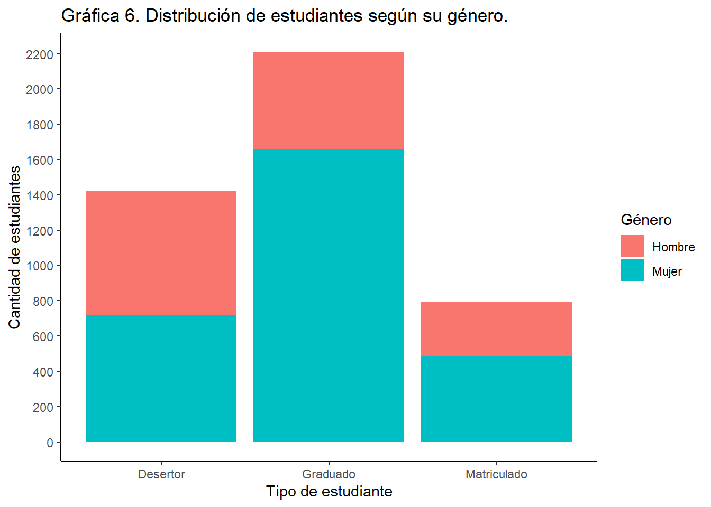
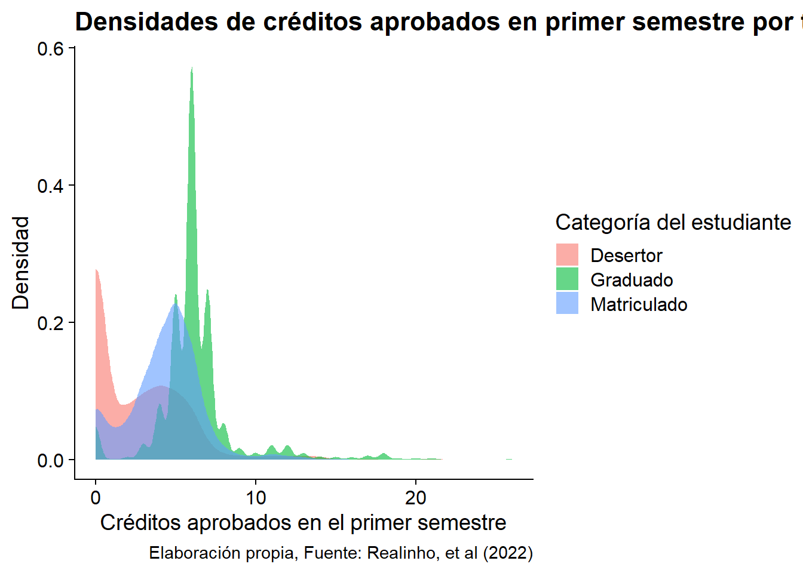
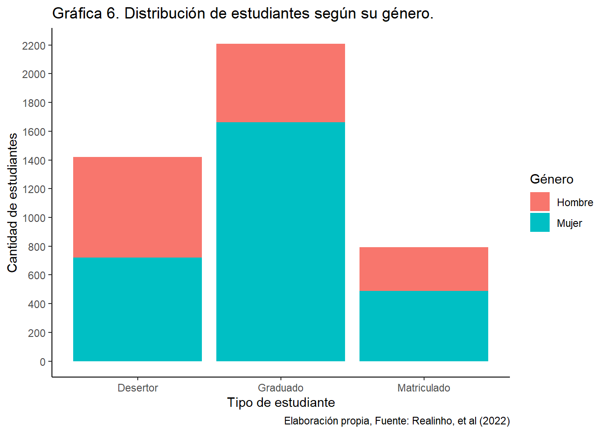
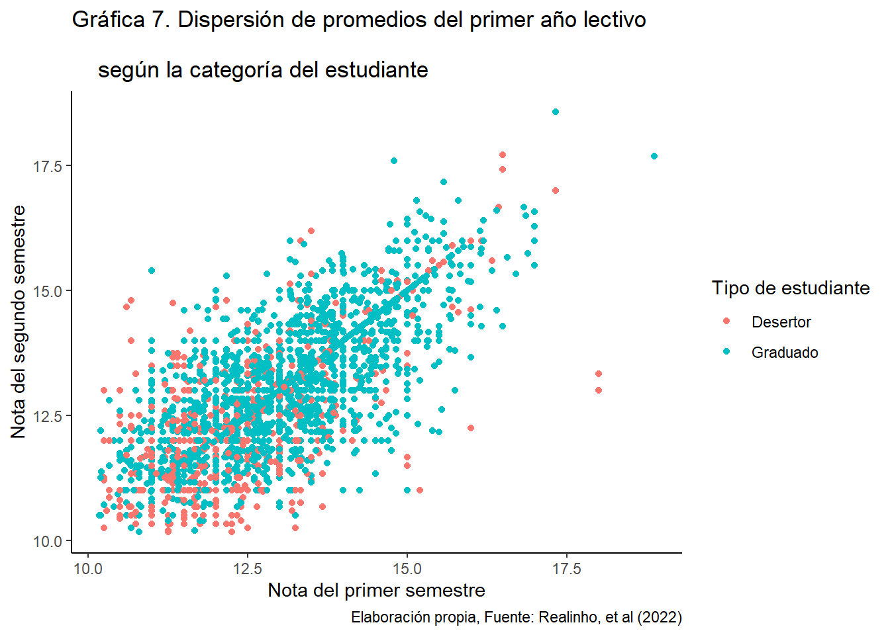
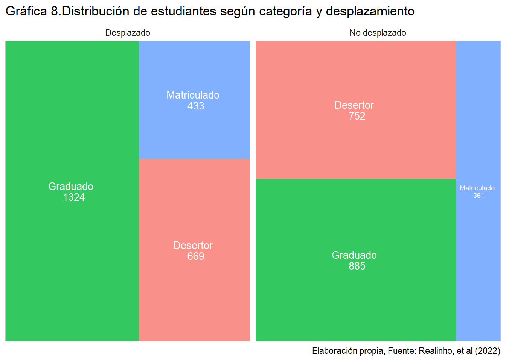
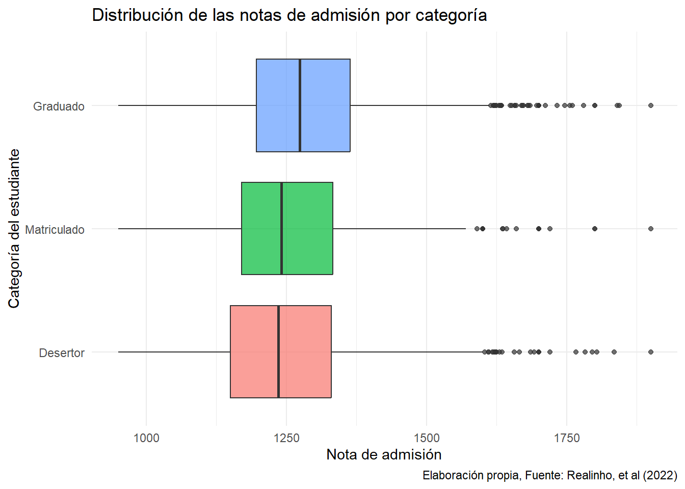
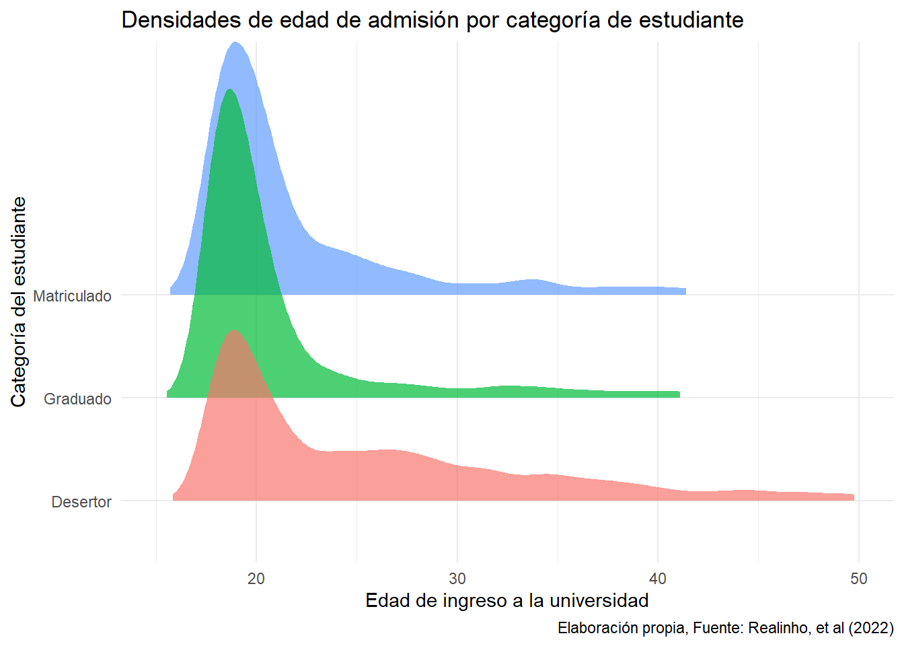

library(tidyverse)
library(janitor)
library(dplyr)
library(ggplot2)
library(knitr)
library(ggridges)
library(treemapify)
df <- read_csv2("base_datos/universidades_europeas.csv")
df <- df %>% clean_names()3 Bitácora 3
3.1 Parte de planificación
3.1.1 Análisis de modelación
Este es un gráfico de tipo heatmap que muestra la frecuencia de cada combinación de niveles académicos de padre y madre del estudiante, un color más oscuro significa mayor cantidad de observaciones de ese tipo. Además, está facetado por la categoría del estudiante (graduado, desertor o matriculado).
df <- df %>%
mutate(target = case_when(
target == "Dropout" ~ "Desertor",
target == "Enrolled" ~ "Matriculado",
target == "Graduate" ~ "Graduado",
TRUE ~ NA
))
df <- df %>%
mutate(mothers_qualification=case_when(
mothers_qualification== 1 ~ "Educación Secundaria",
mothers_qualification== 2 ~ "Licenciatura",
mothers_qualification== 3 ~ "Grado",
mothers_qualification== 4 ~ "Master",
mothers_qualification== 5~ "Doctorado",
mothers_qualification== 6 ~ "9 - 12mo Año de Escolaridad - No Completado",
mothers_qualification== 9 ~ "12º Año de Escolaridad",
mothers_qualification==10~ "11º Año de Escolaridad - No Completado",
mothers_qualification==11~ "7º Año (Antiguo)",
mothers_qualification==12~ "11º Año de Escolaridad",
mothers_qualification==13~ "2º Año del curso complementario de secundaria",
mothers_qualification==14~ "10º Año de Escolaridad",
mothers_qualification==18 ~ "Curso de comercio general",
mothers_qualification==19~ "Educación Básica 3º Ciclo (9º/10º/11º Año)
o Equiv.",
mothers_qualification==20~ "Curso Complementario de Secundaria",
mothers_qualification==22~ "Curso técnico-profesional",
mothers_qualification==25~ "Curso Complementario de Secundaria - No
Concluido",
mothers_qualification==27~ "7º Año de Escolaridad",
mothers_qualification==29~ "9º Año de Escolaridad - No Completado",
mothers_qualification==30~ "8º Año de Escolaridad",
mothers_qualification==31~ "Curso General de Administración y Comercio",
mothers_qualification==33~ "Contabilidad y Administración Suplementaria",
mothers_qualification==34~ "Desconocido",
mothers_qualification==35~ "No sabe leer ni escribir",
mothers_qualification==36~ "Sabe leer sin tener el 4º Año de Escolaridad",
mothers_qualification==37~ "Educación Básica 1º Ciclo (4º/5º Año) o Equiv.",
mothers_qualification==38~ "Educación Básica 2º Ciclo (6º/7º/8º Año) o
Equiv.",
mothers_qualification==39~ "Curso de especialización tecnológica",
mothers_qualification==40~ "Educación Superior - Grado (1º Ciclo)",
mothers_qualification==41~ "Curso de estudios superiores especializados",
mothers_qualification==42~ "Curso técnico superior profesional",
mothers_qualification==43~ "Educación Superior - Máster (2º Ciclo)",
mothers_qualification==44~ "Educación Superior - Doctorado (3º Ciclo)",
TRUE ~ "Desconocido"
))
df <- df %>%
mutate(fathers_qualification=case_when(
fathers_qualification == 1 ~ "Educación Secundaria",
fathers_qualification == 2 ~ "Licenciatura",
fathers_qualification == 3 ~ "Grado",
fathers_qualification == 4 ~ "Master",
fathers_qualification == 5~"Doctorado",
fathers_qualification == 6 ~ "9 - 12mo Año de Escolaridad - No Completado",
fathers_qualification == 9 ~ "12º Año de Escolaridad",
fathers_qualification==10~ "11º Año de Escolaridad - No Completado",
fathers_qualification==11~ "7º Año (Antiguo)",
fathers_qualification==12~ "11º Año de Escolaridad",
fathers_qualification==13~ "2º Año del curso complementario de secundaria",
fathers_qualification==14~ "10º Año de Escolaridad",
fathers_qualification==18 ~ "Curso de comercio general",
fathers_qualification==19~ "Educación Básica 3º Ciclo (9º/10º/11º Año)
o Equiv.",
fathers_qualification==20~ "Curso Complementario de Secundaria",
fathers_qualification==22~ "Curso técnico-profesional",
fathers_qualification==25~ "Curso Complementario de Secundaria - No
Concluido",
fathers_qualification==27~ "7º Año de Escolaridad",
fathers_qualification==29~ "9º Año de Escolaridad - No Completado",
fathers_qualification==30~ "8º Año de Escolaridad",
fathers_qualification==31~ "Curso General de Administración y Comercio",
fathers_qualification==33~ "Contabilidad y Administración Suplementaria",
fathers_qualification==34~ "Desconocido",
fathers_qualification==35~ "No sabe leer ni escribir",
fathers_qualification==36~ "Sabe leer sin tener el 4º Año de Escolaridad",
fathers_qualification==37~ "Educación Básica 1º Ciclo (4º/5º Año) o Equiv.",
fathers_qualification==38~ "Educación Básica 2º Ciclo (6º/7º/8º Año) o
Equiv.",
fathers_qualification==39~ "Curso de especialización tecnológica",
fathers_qualification==40~ "Educación Superior - Grado (1º Ciclo)",
fathers_qualification==41~ "Curso de estudios superiores especializados",
fathers_qualification==42~ "Curso técnico superior profesional",
fathers_qualification==43~ "Educación Superior - Máster (2º Ciclo)",
fathers_qualification==44~ "Educación Superior - Doctorado (3º Ciclo)",
TRUE ~ "Desconocido"
))
df$mothers_qualification<-as.factor(df$mothers_qualification)
df$fathers_qualification<-as.factor(df$fathers_qualification)
sum_mothers_qualification<-df %>%
mutate(mothers_qualification=fct_collapse(mothers_qualification,
"Primaria completada" = c("7º Año (Antiguo)","7º Año de Escolaridad",
"Educación Básica 2º Ciclo (6º/7º/8º Año) o Equiv."),
"Primaria no completado"=c("Sabe leer sin tener el 4º Año de Escolaridad",
"Educación Básica 1º Ciclo (4º/5º Año) o Equiv."),
"Secundaria completada" =c("Educación Secundaria", "12º Año de Escolaridad",
"Curso Complementario de Secundaria"),
"Secundaria no completado"=c("9 - 12mo Año de Escolaridad - No Completado",
"11º Año de Escolaridad - No Completado","11º Año de Escolaridad","2º Año del
curso complementario de secundaria","Educación Básica 3º Ciclo (9º/10º/11º Año)
o Equiv.", "Curso Complementario de Secundaria - No Concluido","9º Año de
Escolaridad - No Completado","8º Año de Escolaridad","10º Año de Escolaridad"),
"Universidad completada"= c("Licenciatura","Grado","Master","Doctorado",
"Educación Superior - Máster (2º Ciclo)","Educación Superior - Grado
(1º Ciclo)","Educación Superior - Doctorado (3º Ciclo)" ),
"Cursos complementarios"= c("Curso de comercio general", "Curso
técnico-profesional", "Curso General de Administración y Comercio","Contabilidad
y Administración Suplementaria","Curso de especialización tecnológica","Curso
de estudios superiores especializados", "Curso técnico superior profesional"),
"No sabe leer ni escribir" = c("No sabe leer ni escribir")
)) %>%
mutate(mothers_qualification=fct_lump(mothers_qualification, n=9)) %>%
count(mothers_qualification, sort=TRUE) %>%
rename(nivel_educativo_madre=n)
sum_fathers_qualification<-df %>%
mutate(fathers_qualification=fct_collapse(fathers_qualification,
"Primaria completada" = c("7º Año (Antiguo)","7º Año de Escolaridad",
"Educación Básica 2º Ciclo (6º/7º/8º Año) o Equiv."),
"Primaria no completado"= c("Sabe leer sin tener el 4º Año de Escolaridad",
"Educación Básica 1º Ciclo (4º/5º Año) o Equiv."),
"Secundaria completada" =c("Educación Secundaria", "12º Año de Escolaridad",
"Curso Complementario de Secundaria"),
"Secundaria no completado"=c("9 - 12mo Año de Escolaridad - No Completado",
"11º Año de Escolaridad - No Completado","11º Año de Escolaridad",
"2º Año del curso complementario de secundaria",
"Educación Básica 3º Ciclo (9º/10º/11º Año) o Equiv.", "Curso Complementario de
Secundaria - No Concluido","9º Año de Escolaridad - No Completado","8º
Año de Escolaridad","10º Año de Escolaridad"),
"Universidad completada"=c("Licenciatura","Grado","Master","Doctorado",
"Educación Superior - Máster (2º Ciclo)","Educación Superior - Grado (1º Ciclo)",
"Educación Superior - Doctorado (3º Ciclo)" ),
"Cursos complementarios"= c("Curso de comercio general", "Curso
técnico-profesional", "Curso General de Administración y Comercio",
"Contabilidad y Administración Suplementaria","Curso de especialización
tecnológica", "Curso de estudios superiores especializados", "Curso técnico
superior profesional"),
"No sabe leer ni escribir" = c("No sabe leer ni escribir")
)) %>%
mutate(fathers_qualification=fct_lump(fathers_qualification, n=9)) %>%
count(fathers_qualification, sort = TRUE) %>%
rename(nivel_educativo_padre=n)sum_fathers_qualification<-sum_fathers_qualification %>%
rename(nivel_de_estudios=fathers_qualification)
sum_mothers_qualification<-sum_mothers_qualification %>%
rename(nivel_de_estudios=mothers_qualification)
sum_qualification<-sum_mothers_qualification %>%
left_join(sum_fathers_qualification, by="nivel_de_estudios")
target_parents_qualification<-df %>%
mutate(mothers_qualification=fct_collapse(mothers_qualification,
"Primaria completada" = c("7º Año (Antiguo)","7º Año de Escolaridad",
"Educación Básica 2º Ciclo (6º/7º/8º Año) o Equiv."),
"Primaria no completado"=c("Sabe leer sin tener el 4º Año de Escolaridad", "Educación Básica 1º Ciclo (4º/5º Año) o Equiv."),
"Secundaria completada" =c("Educación Secundaria", "12º Año de Escolaridad", "Curso Complementario de Secundaria"),
"Secundaria no completado"=c("9 - 12mo Año de Escolaridad - No Completado","11º Año de Escolaridad - No Completado","11º Año de Escolaridad","2º Año del curso complementario de secundaria","Educación Básica 3º Ciclo (9º/10º/11º Año) o Equiv.","Curso Complementario de Secundaria - No Concluido","9º Año de Escolaridad - No Completado", "8º Año de Escolaridad","10º Año de Escolaridad"),
"Universidad completada"=c("Licenciatura","Grado","Master","Doctorado", "Educación Superior - Máster (2º Ciclo)","Educación Superior - Grado (1º Ciclo)","Educación Superior - Doctorado (3º Ciclo)" ),
"Cursos complementarios"= c("Curso de comercio general", "Curso técnico-profesional", "Curso General de Administración y Comercio","Contabilidad y Administración Suplementaria","Curso de especialización tecnológica", "Curso de estudios superiores especializados", "Curso técnico superior profesional"),
"No sabe leer ni escribir" = c("No sabe leer ni escribir")
)) %>%
mutate(fathers_qualification=fct_collapse(fathers_qualification,
"Primaria completada" = c("7º Año (Antiguo)","7º Año de Escolaridad", "Educación Básica 2º Ciclo (6º/7º/8º Año) o Equiv."),
"Primaria no completado"=c("Sabe leer sin tener el 4º Año de Escolaridad","Educación Básica 1º Ciclo (4º/5º Año) o Equiv."),
"Secundaria completada" =c("Educación Secundaria", "12º Año de Escolaridad","Curso Complementario de Secundaria"),
"Secundaria no completado"=c("9 - 12mo Año de Escolaridad - No Completado","11º Año de Escolaridad - No Completado","11º Año de Escolaridad", "2º Año del curso complementario de secundaria", "Educación Básica 3º Ciclo (9º/10º/11º Año) o Equiv.", "Curso Complementario de Secundaria - No Concluido","9º Año de Escolaridad - No Completado", "8º Año de Escolaridad","10º Año de Escolaridad"),
"Universidad completada"=c("Licenciatura","Grado","Master","Doctorado","Educación Superior - Máster (2º Ciclo)","Educación Superior - Grado (1º Ciclo)", "Educación Superior - Doctorado (3º Ciclo)"),
"Cursos complementarios"= c("Curso de comercio general", "Curso técnico-profesional", "Curso General de Administración y Comercio","Contabilidad y Administración Suplementaria","Curso de especialización tecnológica", "Curso de estudios superiores especializados", "Curso técnico superior profesional"),
"No sabe leer ni escribir" = c("No sabe leer ni escribir")
)) %>%
group_by(target, mothers_qualification, fathers_qualification) %>%
summarise(count=n())
grafica_uno<-ggplot(target_parents_qualification, aes(x = mothers_qualification, y = fathers_qualification, fill = count)) +
geom_tile() + scale_fill_gradient(low="#AAE48D",
high = "#2B7308",
guide = "colorbar" )+
facet_wrap(~ target) + labs(
x = "Nivel educativo de la madre",
y = "Nivel educativo del padre",
fill = "Frecuencia", title="Gráfica 1. Comparación del nivel
educativo de los padres y\n el estado de los estudiantes",
caption = "Elaboración propia, Fuente: Realinho, et al (2022)")+theme_bw()+
theme(plot.title = element_text(hjust = 0.5),
axis.text.x = element_text(size=6,angle=90,hjust=1))
print(grafica_uno)
Este es un gráfico de barras que recuenta la frecuencia absoluta de estudiantes que están al día o atrasados con los pagos de las cuotas, los identifica con colores distintos y los separa según su categoría de la variable objetivo.
df <- df %>%
mutate(tuition_fees_up_to_date = case_when(
tuition_fees_up_to_date == 0 ~ "No",
tuition_fees_up_to_date == 1 ~ "Si",
TRUE ~ NA
))
grafica_dos<-df %>%count(tuition_fees_up_to_date, target) %>%
ggplot(aes(x=target, y = n, fill = tuition_fees_up_to_date))+
geom_col(position = "dodge") +
theme_classic()+
labs(
x = "Tipo de Estudiante",
y = "Frecuencia",
fill = "Cuotas al día",
title = "Gráfica 2. Relación entre persona deudora y resultado académico"
) +
scale_fill_manual(values = c("Si" = "#A2CD5A","No"="red"))+
theme(legend.position = "bottom",
panel.border = element_rect(colour = "black", fill = NA),
plot.title = element_text(hjust = 0.5))
print(grafica_dos)
Este es otro gráfico de tipo heatmap, pero que ilustra la cantidad de estudiantes hallados en cada uno de los subgrupos generados al combinar la variable objetivo con una variable binaria (poseedor de beca o no).
df <- df %>%
mutate(scholarship_holder = case_when(
scholarship_holder == 0 ~ "No",
scholarship_holder == 1 ~ "Si",
TRUE ~ NA
))
grafica_tres<-df %>%count(scholarship_holder, target) %>%
ggplot(aes(x=scholarship_holder, y = target, fill = n))+
geom_tile()+
theme_classic() +
labs(x = "Poseedor de Beca Socioeconómica", y = "Tipo de Estudiante", fill = "Frecuencia", title = "Gráfica 3. Frecuencia de Estudiantes Graduados, Matriculados \n o Desertores según su categoría de beca") +
scale_fill_continuous(low = "skyblue", high = "darkblue")+
theme(legend.position = "right",
panel.border = element_rect(colour = "black", fill=NA),
plot.title = element_text(hjust = 0.5))
print(grafica_tres)
Este es un gráfico de barras adicional que visualiza la frecuencia absoluta de estudiantes nacionales e internacionales y los distingue con colores dentro de cada categoría de la variable objetivo.
df <- df %>%
mutate(international = case_when(
international == 0 ~ "No",
international == 1 ~ "Si",
TRUE ~ NA
))
grafica_cuatro<-df %>%count(international, target) %>%
ggplot(aes(x=target, y = n, fill = international))+
geom_col(position = "stack") +
theme_classic()+
labs(
x = "Tipo de Estudiante",
y = "Frecuencia",
fill = "Internacional",
title = "Gráfica 4. Comparación en la frecuencia del estado de los\nestudiantes según su nacionalidad"
) +
scale_fill_manual(values = c("Si" = "#CD5555","No"="#BFEFFF"))+
theme(legend.position = "bottom",
panel.border = element_rect(colour = "black", fill = NA),
plot.title = element_text(hjust = 0.5))
print(grafica_cuatro)
El gráfico mostrado es de tipo densidad y es útil para mostrar la distribución de los créditos aprobados en el primer semestre según la categorías de la variable objetivo. Como existe una superposición significativa de las densidades, fue necesario reducir la opacidad.
grafico_cinco<-ggplot(df, aes(x = curricular_units_1st_sem_approved, fill=target))+
geom_density(alpha=0.6, color=NA)+
labs(
x = "Créditos aprobados en el primer semestre",
y = "Densidad",
fill = "Categoría del estudiante",
title = "Densidades de créditos aprobados en primer semestre por tipo de estudiante",
caption = "Elaboración propia, Fuente: Realinho, et al (2022)"
) +cowplot::theme_cowplot()
print(grafico_cinco)
Nuevamente se presenta un gráfico de barras sobre frecuencia absoluta que segmenta las categorías de la variable objetivo por una variable binaria diferenciada por color, en este caso el género.
df<- df %>%
mutate (gender = case_when(
gender == "0" ~ "Mujer",
gender == "1" ~ "Hombre",
TRUE ~ NA
))
grafico_seis<-df %>% ggplot(aes(fill=gender, x=target))+geom_bar(stat="count")+
theme_classic()+labs(
x="Tipo de estudiante",
y= "Cantidad de estudiantes",
fill="Género",
title = "Gráfica 6. Distribución de estudiantes según su género.",
caption = "Elaboración propia, Fuente: Realinho, et al (2022)"
)+
scale_y_continuous(breaks = seq(0, max(table(df$target)), by = 200))
print(grafico_seis)
Este gráfico de estilo scatter genera puntos en el plano cuyas coordenadas corresponden a las notas del primer y segundo semestre. El color de cada punto denota la categoría de la variable objetivo a la que pertenece cada observación.Para apreciar mejor la información y recortar datos no relevantes, se expone solo las notas de 10 a 20.
df <- df %>%
mutate(
curricular_units_1st_sem_grade = as.numeric(gsub("(\\d+\\.\\d+).*", "\\1", curricular_units_1st_sem_grade)) %>%
round(2))
df <- df %>%
mutate(
curricular_units_2nd_sem_grade = as.numeric(gsub("(\\d+\\.\\d+).*", "\\1", curricular_units_2nd_sem_grade)) %>%
round(2))
grafico_siete<-df %>%
filter(curricular_units_1st_sem_grade < 20,curricular_units_2nd_sem_grade > 10,
curricular_units_2nd_sem_grade < 20,curricular_units_1st_sem_grade > 10,
target %in% c("Graduado", "Desertor")) %>%
ggplot(aes(x=curricular_units_1st_sem_grade, y=curricular_units_2nd_sem_grade,
colour =target))+
geom_point()+theme_classic()+labs(
x="Nota del primer semestre",
y="Nota del segundo semestre",
title = "Gráfica 7. Dispersión de promedios del primer año lectivo\n
según la categoría del estudiante",
color="Tipo de estudiante",
caption = "Elaboración propia, Fuente: Realinho, et al (2022)"
)
print(grafico_siete)
Este es un gráfico de tipo treemap que ilustra las proporciones de estudiantes graduados, matriculados y desertores dentro de dos grandes grupos creados a partir de una distinción por variable binaria (desplazado o no desplazado).
df <- df %>%
mutate(displaced = case_when(
displaced == 0 ~ "No desplazado",
displaced == 1 ~ "Desplazado",
TRUE ~ NA
))
df <- df %>% mutate(target = fct_relevel(target, "Desertor", "Graduado", "Matriculado"))
data_summary <- df %>%
group_by(displaced, target) %>%
summarise(count = n()) %>%
ungroup()
grafica_ocho<-ggplot(data_summary, aes(area = count, fill = target,
label = paste(target, "\n", count),
subgroup = displaced)) +
geom_treemap(alpha = 0.8) +
geom_treemap_text(colour = "white", place = "centre", size = 10)+
facet_wrap(~displaced) +
labs(
title = "Gráfica 8.Distribución de estudiantes según categoría y desplazamiento",
fill = "Estado",
caption = "Elaboración propia, Fuente: Realinho, et al (2022)"
) +
theme_minimal()+
theme(legend.position="none")
print(grafica_ocho)
Este gráfico de tipo boxplot o diagrama de caja ilustra la distribución de las notas de admisión para cada categoría de la variable objetivo.
df <- df %>% mutate(target = fct_relevel(target, "Desertor", "Matriculado", "Graduado"))
grafica_nueve<-ggplot(df, aes(x = admission_grade, y = target, fill = target))+
geom_boxplot(alpha = 0.7)+
labs(
x = "Nota de admisión",
y = "Categoría del estudiante",
title = "Gráfica 9.Distribución de las notas de admisión por categoría",
caption = "Elaboración propia, Fuente: Realinho, et al (2022)"
)+
theme_minimal()+
theme(legend.position="none")
print(grafica_nueve)
Este es un gráfico de densidad tipo ridgeline, el cual muestra las densidades de la edad al momento de ingreso a la universidad para cada categoría de la variable objetivo.
df <- df %>% mutate(target = fct_relevel(target, "Desertor", "Graduado",
"Matriculado"))
grafica_diez<-ggplot(df, aes(x = age_at_enrollment, y = target, fill = target))+
geom_density_ridges(rel_min_height = 0.02, scale = 3, color=NA, alpha=0.7)+
xlim(15, 50)+
labs(
x = "Edad de ingreso a la universidad",
y = "Categoría del estudiante",
title = "Gráfica 10.Densidades de edad de admisión por categoría de estudiante",
caption = "Elaboración propia, Fuente: Realinho, et al (2022)"
)+
theme_minimal()+
theme(legend.position="none")
print(grafica_diez)
Esta tabla contiene la frecuencia absoluta de cada categoría de la variable objetivo y calcula la media, mediana y desviación estándar de las calificaciones obtenidas por los estudiantes en el primer semestre de universidad.
tabla_cuatro <- df %>% group_by(target) %>%
summarise(
Media = mean(curricular_units_1st_sem_grade, na.rm=TRUE),
Mediana = median(curricular_units_1st_sem_grade, na.rm=TRUE),
DesviaciónEstándar = sd(curricular_units_1st_sem_grade, na.rm = TRUE),
N = n()
)
tabla_cuatro <- tabla_cuatro %>% filter(!is.na(target)) %>%
arrange(desc(N))
kable(tabla_cuatro)| target | Media | Mediana | DesviaciónEstándar | N |
|---|---|---|---|---|
| Graduado | 13.962906 | 12.9 | 15.278949 | 2209 |
| Desertor | 7.458248 | 10.8 | 8.562162 | 1421 |
| Matriculado | 11.148388 | 12.0 | 5.266920 | 794 |
Similarmente, esta tabla recuenta la cantidad de estudiantes por género y calcula las medidas de tendencia central para la nota de cada grupo en los primeros dos semestres de universidad.
tabla_cinco <- df %>% group_by(gender) %>%
summarise(
N = n(),
Media_I = mean(curricular_units_1st_sem_grade, na.rm=TRUE),
Mediana_I = median(curricular_units_1st_sem_grade, na.rm=TRUE),
DesviaciónEstándar_I = sd(curricular_units_1st_sem_grade, na.rm = TRUE),
Media_II = mean(curricular_units_2nd_sem_grade, na.rm=TRUE),
Mediana_II = median(curricular_units_2nd_sem_grade, na.rm=TRUE),
DesviaciónEstándar_II = sd(curricular_units_2nd_sem_grade, na.rm = TRUE)
)
tabla_cinco <- tabla_cinco %>% filter(!is.na(gender)) %>%
arrange(desc(N))
kable(tabla_cinco)| gender | N | Media_I | Mediana_I | DesviaciónEstándar_I | Media_II | Mediana_II | DesviaciónEstándar_II |
|---|---|---|---|---|---|---|---|
| Mujer | 2868 | 12.241307 | 12.4 | 13.433039 | 13.632374 | 12.33 | 20.73809 |
| Hombre | 1556 | 9.759627 | 11.8 | 9.971996 | 9.424743 | 11.57 | 11.66548 |
La última tabla recopila las cifras correspondientes a la cantidad de estudiantes presentes en cada curso contemplado en la base de datos, así como qué número de estudiantes pertenecen a cada categoría de la variable objetivo por curso.
df <- df %>%
mutate(course=case_when(
course ==33 ~ "Tecnologías de producción de biocombustibles",
course ==171 ~ "Animación y Diseño Multimedia",
course ==8014 ~ "Servicio Social (asistencia nocturna)",
course ==9003 ~ "Agronomía",
course ==9070 ~ "Diseño de comunicación",
course ==9085 ~ "Enfermería Veterinaria",
course ==9119 ~ "Ingeniería Informática",
course ==9130 ~ "Equinicultura",
course ==9147 ~ "Administración",
course ==9238 ~ "Servicio Social",
course ==9254 ~ "Turismo",
course ==9500 ~ "Enfermería",
course ==9556 ~ "Odontología",
course ==9670 ~ "Gerencia de Publicidad y Marketing",
course ==9773 ~ "Periodismo y Comunicación",
course ==9853 ~ "Educación básica",
course ==9991 ~ "Administración (asistencia nocturna)"
))
tabla_seis <- df %>% group_by(course) %>%
summarise(Cantidad = n(),
Desertor = sum(target == "Desertor"),
Graduado = sum(target == "Graduado"),
Matriculado = sum(target == "Matriculado"))
tabla_seis <- tabla_seis %>%
filter(!is.na(course)) %>%
rename(Curso = course) %>%
arrange(desc(Cantidad))
kable(tabla_seis)| Curso | Cantidad | Desertor | Graduado | Matriculado |
|---|---|---|---|---|
| Enfermería | 766 | 118 | 548 | 100 |
| Administración | 380 | 134 | 138 | 108 |
| Servicio Social | 355 | 65 | 248 | 42 |
| Enfermería Veterinaria | 337 | 90 | 172 | 75 |
| Periodismo y Comunicación | 331 | 101 | 196 | 34 |
| Administración (asistencia nocturna) | 268 | 136 | 78 | 54 |
| Gerencia de Publicidad y Marketing | 268 | 95 | 125 | 48 |
| Turismo | 252 | 96 | 115 | 41 |
| Diseño de comunicación | 226 | 51 | 133 | 42 |
| Animación y Diseño Multimedia | 215 | 82 | 96 | 37 |
| Servicio Social (asistencia nocturna) | 215 | 71 | 123 | 21 |
| Agronomía | 210 | 86 | 87 | 37 |
| Educación básica | 192 | 85 | 57 | 50 |
| Ingeniería Informática | 170 | 92 | 14 | 64 |
| Equinicultura | 141 | 78 | 42 | 21 |
| Odontología | 86 | 33 | 36 | 17 |
| Tecnologías de producción de biocombustibles | 12 | 8 | 1 | 3 |
3.1.1.1 Construcción de fichas de resultados
1.FICHA 6
Nombre de su hallazgo/resultado: Relación significativa entre el género de los estudiantes y su permanencia en la carrera
Resumen en una oración: la cantidad de estudiantes mujeres graduadas es significativamente mayor a la cantidad de estudiantes hombres graduados
Principal característica: En este gráfico se observan dos variables categóricas, el género y el tipo de estudiante
Problemas o posibles desafíos: Al considerar sólo dos géneros, existe una parte de la población que queda totalmente fuera del estudio. Además, el análisis de este resultado considera una investigación mucho más social y cultural. Esto dado que distintas culturas y constructos sociales imponen ciertas restricciones y expectativas ante la educación para cada género.
Resumen en un párrafo: El gráfico #6 ilustra si el género juega un papel fundamental en la educación superior. Se puede concluir que de las personas graduadas la mayor cantidad son mujeres. La diferencia de este número es significativa en comparación de los hombres en la misma categoría. Según la investigación realizada por Landeta, et al (2011) una de las variables con mayor influencia en el rendimiento académico probó ser el género, siendo las mujeres aquellas con un rendimiento académico mayor en comparación de sus compañeros hombres. Exactamente lo que está siendo visualizado en el gráfico. Además, se entiende que no hay una diferencia significativa entre géneros a la hora de desertar.
- FICHA 7
Nombre de su hallazgo/resultado: Vínculo entre las notas del primer año y la decisión de continuar sus estudios superiores o desertar
Resumen en una oración: Entre más alta sea la nota tanto del primer como del segundo semestre, es más posible que el estudiante se gradúe.
Principal característica: Se considera la nota promedio de cada semestre, donde la nota más alta es 20 puntos
Problemas o posibles desafíos: En esta gráfica solo se consideran las notas del primer año, lo que no es significativo al rendimiento académico a través de toda la vida universitaria de cada estudiante. Las adaptaciones de cada persona a un ambiente nuevo, dado que es el primer año, varían. Solo considerar estas dos calificaciones puede ser insuficiente para analizar problemas en el desempeño académico
Resumen en un párrafo: Basado en el gráfico #7, es posible concluir que los estudiantes con notas más altas durante tanto el primer como el segundo semestre son aquellos que con mayor frecuencia se gradúan. Es decir, aquellos estudiantes con notas más bajas son más propensos a abandonar la educación superior. Esta tendencia, de mejores notas en las personas que eventualmente se gradúan se expone tanto por Martinez-Otero (2009), como por Lobos y Rodriguez (2022). Aunque la importancia que ambos textos le dan a este factor varía, ambos están de acuerdo en que el rendimiento académico si forma parte de la decisión que es desertar. Además, Landeta, et al (2011) propone que el promedio (nota) y el género son las variables con una mayor correlación conforme al rendimiento académico.
- FICHA 8
Nombre de su hallazgo/resultado: Incidencia sobre la permanencia en la carrera de la necesidad de desplazamiento a la universidad.
Resumen en una oración: hay una mayor proporción de graduados en el grupo de estudiantes que necesitaron desplazarse para asistir a la universidad.
Principal característica: usar un gráfico facetado de tipo treemap facilita la interpretación visual y el análisis cuantitativo de la distribución de estudiantes graduados, matriculados y desertores según un criterio binario (tuvo la necesidad de desplazarse para asistir a la universidad o no).
Problemas o posibles desafíos: la frecuencia absoluta de estudiantes desplazados es mayor que la de no desplazados, por lo que mayores cifras en cierta categoría no necesariamente indican una tendencia. Sin embargo, esto se mitiga con el componente visual del gráfico, pues el área que ocupa cada categoría ilustra el porcentaje que representa en su respectivo grupo.
Resumen en un párrafo: Agrupando los estudiantes entre aquellos que tuvieron que desplazarse para asistir a la universidad y los que no, luego clasificándolos por su estado en la carrera (graduado, matriculado o desertor) y representando estos datos en el gráfico #8 facetado de tipo treemap, se revelaron comportamientos interesantes. Primero, es destacable que entre los desplazados existe una menor cantidad de desertores que en los no desplazados, aunque en términos absolutos existen más estudiantes del primer grupo que del segundo. Otro resultado llamativo es que, dentro de los desplazados, la categoría de estudiantes graduados representan alrededor del 54,57%, mientras que en los no desplazados, los graduados componen el 44,29%. Lo anterior parece indicar que existe una mayor probabilidad de graduarse entre los estudiantes que tuvieron que mudarse para recibir una educación superior. Esto contradice los resultados de Lobos y Rodríguez (2022), quienes argumentan que los costos de alquiler y transporte son algunos de los principales obstáculos que enfrentan los estudiantes para continuar con su carrera.
- FICHA 9
Nombre de su hallazgo/resultado: Importancia de la nota de admisión sobre la probabilidad de que un estudiante se gradúe.
Resumen en una oración: La mediana de las notas de admisión de los estudiantes graduados fue más alta que la de aquellos que desertaron o siguen matriculados.
Principal característica: El uso de un diagrama de caja permite visualizar fácilmente el comportamiento de la nota de admisión en las tres categorías de estudiantes, incluyendo los cuartiles y los valores atípicos.
Problemas o posibles desafíos: La existencia de valores atípicos muy altos en la categoría de desertor demuestra que este resultado es solo una tendencia general y no una garantía de que una mejor nota de admisión implique graduarse.
Resumen en un párrafo:Al graficar la distribución de las notas de admisión según la categoría final del estudiante mediante un diagrama de cajas, se obtuvo un resultado previsible, aunque tal vez la tendencia no es tan fuerte como se esperaba. Es evidente que el valor de la mediana para los estudiantes graduados es mayor que el de los demás grupos. Además, en el tercer cuartil de la categoría de graduados están contenidos valores más altos que en las otras dos. Estos resultados concuerdan con los hallazgos de Montero, Villalobos y Valverde (2007), que determinaron que el promedio de admisión tiene una relación positiva con el desempeño académico más adelante en la carrera. Sin embargo, la similitud de los “bigotes” entre las tres clasificaciones, lo cual indica una variabilidad similar de los valores en los tres grupos, así como la presencia de valores atípicos muy altos entre los desertores, hacen cuestionar la firmeza de esta tendencia.
- FICHA 10
Nombre de su hallazgo/resultado: Influencia de la edad de ingreso a la universidad sobre la permanencia en la carrera.
Resumen en una oración: Una menor edad al momento de entrar a la universidad se relaciona con una mayor posibilidad de permanecer en la carrera.
Principal característica: Un gráfico de densidad de tipo ridgeline es más apropiado que uno convencional para distinguir la distribución de las categorías dada la concentración de los datos en la franja de 17 a 23 años.
Problemas o posibles desafíos: Fue necesario limitar el alcance del gráfico a un máximo de 50 años, pues de no hacerlo era más difícil apreciar el comportamiento de los datos en rangos más relevantes y reducidos, como el de 17 a 25 años. Además, solo la categoría de desertor tenía una densidad perceptible para valores más altos que 50.
Resumen en un párrafo:La representación mediante el gráfico #10 tipo ridgeline de la densidad de las edades de admisión a la universidad según la categoría del estudiante revela tendencias significativas. Un resultado predecible es el hecho de que en todos los grupos, la mayor densidad ocurre entre los 18 y los 20 años, lo cual no es sorprendente dado que una gran cantidad de los estudiantes que ingresan a las universidades acaban de concluir los estudios secundarios. Más interesante es la distribución de la densidad del grupo de desertores, que son la categoría con mayor densidad después de los 25 años y los únicos con una densidad apreciable más allá de los 42 años. Por el contrario, la gran mayoría de los estudiantes graduados o matriculados entraron a la universidad con menos de 25 años.
- FICHA 11
Nombre de su hallazgo/resultado: Diferencias entre las notas de estudiantes graduados, desertores y matriculados.
Resumen en una oración: Los estudiantes graduados presentan una media de notas en el primer semestre significativamente mayor que los desertores y matriculados.
Principal característica: Se considera el promedio ponderado al final del primer semestre junto con las materias reprobadas.
Problemas o posibles desafíos: Hay una amplia variabilidad en las notas, especialmente con los graduados que presentan una desviación estándar relativamente grande a comparación de su media y mediana, lo cual sugiere que existen algunos impactos complementarios que afectan el desempeño.
Resumen en un párrafo:En el análisis de las notas entre estudiantes graduados, desertores y matriculados, se puede observar que son los graduados los que presentan una mayor media de notas en el primer semestre y los desertores la más baja lo cual sugiere que el impacto que tienen estas notas puede afectar el desempeño a futuro del estudiante llegando a la conclusión de desertar sus estudios. La desviación estándar de los graduados sugiere que hay algunas personas con notas bastante altas que se graduaron así como personas que presentan notas suficientes para graduarse pero no sobresalientes. Los datos de los estudiantes matriculados es el que se mantiene más consistente siendo este un grupo más interesante de analizar.
- FICHA 12
Nombre de su hallazgo/resultado: Comparación del desempeño académico en un año entre géneros.
Resumen en una oración: Las estudiantes del género femenino presentan una media de notas más alta que los estudiantes masculinos en un año lectivo.
Principal característica: Se considera el promedio ponderado total por semestre de los estudiantes, considerando tanto graduados, desertores y matriculados.
Problemas o posibles desafíos:Se tiene aproximadamente el doble de registros de estudiantes femeninas que masculinos lo cual puede generar una escasez de información por parte del género masculino.
Resumen en un párrafo: El análisis muestra que las estudiantes del género femenino tienen un rendimiento superior académicamente al de los estudiantes masculinos en ambos semestres sin embargo presentan una mayor desviación estándar lo cual puede significar varios aspectos los cuales se deben profundizar. Las desviaciones de los estudiantes masculinos son significativamente inferiores que las de las estudiantes femeninas significando así que se tiene un registro más consistente en sus notas. Note que además no se está separando la información según el tipo de estudiante y dado que hay más estudiantes femeninos graduados que masculinos esto justifica muy bien la diferencia entre estas características.
- FICHA 13
Nombre de su hallazgo/resultado: Clasificación de los estudiantes según la materia cursada.
Resumen en una oración: Muestra la cantidad de estudiantes en diferentes cursos y su clasificación según su deserción o graduación.
Principal característica: Se destacan los cursos con mayor deserción en el área de administración y enfermería.
Problemas o posibles desafíos:Hay cursos que presentan una muy baja cantidad de estudiantes y por otra parte otros cursos presentan una muy alta cantidad de estudiantes como el de enfermería por lo que la variabilidad de los datos resulta un desafío para identificar los factores que generan la deserción estudiantil.
Resumen en un párrafo: La tabla proporciona los registros de los estudiantes que cursaron algunas materias según sus carreras y muestran el resultado en la categoría del estudiante al culminar el curso, donde algunos de estos deciden desertar la carrera universitaria y otros deciden continuar. Podemos observar que los cursos con mayor cantidad de estudiantes matriculados son enfermería y administración siendo este último el de mayor porcentaje de deserción. Se observan que los cursos con mayor cantidad de personas graduadas son enfermería y servicio social mientras que además de administración es en el área de enfermería y comunicación donde se encuentra la mayor deserción estudiantil.
3.1.1.2 Ordenamiento de los elementos de reporte
| Elementos de Reporte | ||
|---|---|---|
| Tipo | Primarios | Secundarios |
| Teorías | Modelo de Condicionantes del Fracaso esocolar de Martínez Otero | Teoría Ecológica de Urie Bronferbrenner |
| Ideas | Los factores económicos son responsables de la continuación de estudios superiores. Lobos | La deserción escolar en jóvenes mujeres está influenciada por factores sociales, económicos y familiares que afectan su trayectoria educativa. Estrada-Ruiz |
| Resultados de Autores | Existen diferencia marcadas entre estudiantes becados y no becados respecto a varios factores asociados al rendimiento académico, pero no necesariamente dictan tendencias sobre el promedio de calificaciones del estudiante. Garbanzo | |
| El índice inteligencia emocional y el promedio de admisión tienen relación positiva con el desempeño, mientras que la evaluación centrada en exámenes y la enseñanza enfocada en clases magistrales tuvieron efectos negativos en el desempeño. Montero Rojas. | Los factores con mayor influencia sobre el desempeño académico de estudiantes universitarios son el género y el deseo de estudiar un posgrado. Izar Landeta. | |
| Métodos | Predicting Student Dropout and Academic Success; base de datos por Realinho, et al (2022) | Los modelos multinivel son la metodología más adecuada para tratar datos jerárquicos en la investigación educativa, superando las restricciones de los modelos de regresión lineal tradicionales. Murillo Torrecilla. |
| Generación de gráficas (Grolemund, 2017) | ||
| Creación de tablas(Grolemund, 2017) | Impacto positivo del uso de tecnologías de la información y la comunicación en el rendimiento académico de estudiantes universitarios. Martha Jiménez | |
| Descripción de gráficos y tablas creadas | ||
| Resultados Propios | Impacto de la obtención de una beca socioeconómica en la permanencia en la universidad | Relación entre la completitud de los estudios superiores de ambos padres y la permanencia del estudiante en la carrera |
| Relación entre cumplimiento de cuotas escolares y permanencia del estudiante en la carrera. | Independencia entre el origen del estudiante y la permanencia en la carrera. | |
| Relación entre los créditos aprobados en el primer semestre de carrera universitaria y la permanencia en la carrera | Comparación del desempeño académico en un año entre géneros. | |
| Relación significativa entre el género de los estudiantes y su permanencia en la carrera | Diferencias entre las notas de estudiantes graduados, desertores y matriculados. | |
| Vínculo entre las notas del primer año y la decisión de continuar sus estudios superiores o desertar | Diferencias entre las notas de estudiantes graduados, desertores y matriculados. | |
| Importancia de la nota de admisión sobre la probabilidad de que un estudiante se gradúe. | Influencia de la edad de ingreso a la universidad sobre la permanencia en la carrera. |
Tabla ordenada
| Sección | Temas a tratar |
|---|---|
| Introducción | 1. Modelo de condicionantes del fracaso escolar de Martinez-Otero (primario) 2. Los factores económicos son responsables de la continuación de estudios superiores. Lobos. (primario) 3. La deserción escolar en jóvenes mujeres está influenciada por factores sociales, económicos y familiares que afectan su trayectoria educativa. Estrada-Ruiz (secundario) 4. Teoría ecológica de Urie Bronfenbrenner (secundario) 5. Existen diferencias marcadas entre estudiantes becados y no becados respecto a varios factores asociados al rendimiento académico, pero no necesariamente dictan tendencias sobre el promedio de calificaciones del estudiante. Garbanzo (primario) 6. Los factores con mayor influencia sobre el desempeño académico de estudiantes universitarios son el género y el deseo de estudiar un posgrado. Izar Landeta. (secundario) 7. El índice inteligencia emocional y el promedio de admisión tienen relación positiva con el desempeño, mientras que la evaluación centrada en exámenes y la enseñanza enfocada en clases magistrales tuvieron efectos negativos en el desempeño. Montero Rojas. (principal)1 |
| Metodología | 1. Predicting Student Dropout and Academic Success; base de datos por Realinho, et al (2022) (principal) 2. Generación de gráficas (Grolemund, 2017) (principal) 3. Creación de tablas (Grolemund, 2017) 4. Los modelos multinivel son la metodología más adecuada para tratar datos jerárquicos en la investigación educativa, superando las restricciones de los modelos de regresión lineal tradicionales. Murillo Torrecilla (secundario) 5. Impacto positivo del uso de la tecnologías de la información y la comunicación en el rendimiento académico de estudiantes universitarios. Martha Jiménez (secundario) 6. Descripción de gráficos y tablas creadas (primario) |
| Resultados | 1. Relación entre la completitud de los estudios superiores de ambos padres y la permanencia del estudiante en la carrera (secundario) 2. Relación entre cumplimiento de cuotas escolares y permanencia del estudiante en la carrera (primario) 3. Impacto de la obtención de una beca socioeconómica en la permanencia en la universidad (primerio) 4. Independencia entre el origen del estudiante y la permanencia en la carrera (secundario) 5. Relación entre los créditos aprobados en el primer semestre de carrera universitaria y la permanencia en la carrera (primario) 6. Diferencias entre las notas de estudiantes graduados, desertores y matriculados (secundario) 7. Relación significativa entre el género de los estudiantes y su permanencia en la carrera (primario) 8. Comparación del desempeño académico en un año entre géneros (secundario) 9. Vínculo entre las notas del primer año y la decisión de continuar sus estudios superiores o desertar (primario) 10. Incidencia sobre la permanencia en la carrera de la necesidad de desplazamiento a la universidad (secundario) 11. Importancia de la nota de admisión sobre la probabilidad de que un estudiante se gradúe (primario) 12. Influencia de la edad de ingreso a la universidad sobre la permanencia en la carrera (secundario) 13. Importancia de la última materia cursada en la decisión de continuar con los estudios o desertar (secundario) |
3.2 Parte de escritura
3.2.1 Introducción
La educación es el motor de cualquier sociedad, sirve como mecanismo para expandir el conocimiento y enriquecer la cultura. A su vez es una herramienta capaz de combatir la pobreza, mejorar la salud y lograr la igualdad de género. Sin embargo, una problemática creciente es la cantidad de personas que no completan sus estudios, ya sean de primaria, secundaria o educación superior. La formación de profesionales es un peldaño fundamental en el crecimiento económico y exploración del conocimiento para cualquier nación por lo que la permanencia en los centros de educación universitaria es fundamental. No obstante, no es un trabajo sencillo encontrar las causas del abandono de esta etapa de la educación para de esta manera ayudar a contrarrestarlas. Es así, que se busca analizar la manera en que los factores sociales, económicos, académicos y familiares influyen en la trayectoria académica de la persona estudiante.
La decisión de abandonar los estudios universitarios es el resultado de la interacción de factores individuales y contextuales que podrían afectar el rendimiento de un estudiante. Tal como lo describe Martin-Otero (2009) en su investigación acerca de los condicionantes del fracaso de la educación secundaria. Mientras que los niveles de educación comentados son distintos, los principios que expone se extienden a cada nivel. Primeramente, se define el fracaso escolar como el punto en que el estudiante falla en alcanzar ciertos marcadores dependiendo de su nivel, edad y desarrollo en los centros educativos. Al intentar encontrar los determinantes de ese fracaso, se presenta un problema: la interconección de los factores y la complejidad de separar la afectación de cada uno de los condicionantes. El autor reúne información en base a investigaciones previas y reflexiones teóricas e identifica condicionantes como el contexto socioeconómico, las metodologías de enseñanza y la inteligencia emocional del estudiante como parte de los determinantes del rendimiento académico. Se sugiere que si se quiere disminuir el fracaso escolar es necesario un enfoque integral que considere aspectos emocionales, morales y sociales.
Asimismo, un aspecto importante a considerar son los factores económicos. Estos, según Lobos (2022) son los más influyentes en la deserción estudiantil a nivel universitario en Centroamérica. Las dificultades económicas son limitantes para los estudiantes de la educación superior y los obliga a tomar decisiones acerca de su permanencia o retiro de las universidades. El autor argumenta que los altos costos de matrícula, materiales, transporte, alimentación y demás gastos son el principal obstáculo que enfrentan los estudiantes para continuar con su carrera, así como lo es la imposibilidad de estudiar y trabajar simultáneamente. Esto apunta a que la falta de dinero o los medios para obtenerlo son el principal causante de que una persona abandone la universidad. Sin embargo, se destacan otros factores que no son de carácter económico, como la personalidad del estudiante, que incluye aspectos como tolerancia a la frustración y autoestima. Asimismo, se determina que los antecedentes familiares en educación son relevantes para el estudiante. Por otro lado, se establece que el factor académico o institucional, que incluye aspectos como horarios de clase, metodología de enseñanza y personal docente, también juegan un papel en la trayectoria académica del estudiante.
Mientras tanto, en artículos como el de Marcos Estrada-Ruiz (2015) se enfatizan las causas de deserción escolar desde el punto de vista social. Se destaca que las principales razones al tomar esta decisión son la presión social, responsabilidades familiares y la falta de apoyo institucional. Razones que a su vez son consideradas por Lobos y Rodriguez (2022) pero como causantes secundarios. Es importante señalar que Estrada-Ruiz (2015) centra su estudio en mujeres. El estudio revela que muchas de estas jóvenes enfrentan vulnerabilidades significativas tras abandonar la escuela, lo que impacta sus trayectorias de vida. Además, se destaca la importancia de las relaciones familiares y el contexto social en la decisión de regresar a la educación. La investigación subraya la necesidad de abordar las desigualdades de género en el ámbito educativo.
Tanto el estudio realizado por Niebles (2023) acerca de la Teoría de los Sistemas Ecológicos de Bronfenbrenner como el de Estrada-Ruiz (2015) resaltan la falta de apoyo social y la carencia de políticas educativas que se involucren en el área. No obstante, este enfoque social es minimizado en estudios como el realizado por Niebles (2023) acerca de la Teoría de los Sistemas Ecológicos de Bronfenbrenner quien acepta el involucramiento que tiene el ambiente social y cultural donde se desarrolla el individuo, pero lo descarta dentro de su investigación debido a su complejidad. En esta fuente se destaca la importancia de un enfoque más integral que reconozca la complejidad del fenómeno por la interconexión de los distintos factores para poder crear reformas y desarrollar estrategias para prevenir el abandono escolar. Esto mediante la investigación de los factores con consecuencias más inmediatas como lo son los problemas económicos, falta de apoyo social y la deficiencia de las políticas educativas. Además, define cinco sistemas compuestos por los distintos tipos de relación que se pueden tener entre los individuos y dicta que entre más cercana sea la relación esta tiene un mayor impacto sobre la persona. Bronfenbrenner considera estos cinco sistemas ecológicos: el microsistema, macrosistema, exosistema, y el mesosistema. Cada uno influye a su manera en el desarrollo del individuo; por ejemplo, el microsistema es el más influyente ya que abarca su entorno inmediato; es decir, su familia, escuela, amistades, etc. El macrosistema en cambio, es más ambiental, en este se discuten los factores culturales, el estatus socioeconómico, origen etnico, entre otros. A diferencia de la visión de Martinez-Otero cuya opinión radica en que estos círculos sociales no son afectados por cercanía sino por su papel dentro de la vida de cada quien.
Desde una perspectiva práctica, artículos como el de Garbanzo Vargas (2013) analizan los posibles factores de la deserción estudiantil a partir de una encuesta. La autora observa el rendimiento académico como indicador de la calidad de la educación y define de manera general algunos componentes teóricos relevantes: rendimiento académico, nivel socioeconómico y la relación entre ambos. Luego, plantea una encuesta que contempla: sexo, edad, beca, colegio de procedencia, satisfacción con la carrera, hábitos de estudio, nivel socioeconómico, satisfacción con los profesores, convivencia familiar, nivel educativo de los padres, nota de admisión, entre otros. A la vez, se distinguió entre aquellos estudiantes con la máxima categoría de beca y aquellos que no solicitaron beca. Se concluyó que en las carreras de alta demanda, no se produce una gran diferencia entre el promedio de calificación entre becados y no becados. Por otro lado, en las carreras de baja demanda, las variables de nota de admisión, satisfacción con los servicios y nivel socioeconómico, sí tuvieron un impacto más marcado sobre las diferencias en el promedio entre becados y no becados.
Otros estudios no consideran una separación entre carreras de alta y baja demanda, así como entre estudiantes becados y no becados, al estudiar los factores que pueden afectar el rendimiento académico. Por ejemplo, los estudios realizados por Izar Landeta, Ynzunza Cortés y López Gama (2011) y Montero Rojas, Villalobos Palma, y Valverde Bermúdez (2007), por lo que no es imprudente asumir que estos autores no consideran que estos factores sean tan significativos. Las fuentes consultadas por Izar, et. al. (2007) proponen diferentes enfoques, por ejemplo: factores fisiológicos, pedagógicos, psicológicos, sociológicos, familiares, institucionales, entre otros. Basado en estos aspectos la encuesta realizada por Izar, et. al. determinó que las variables con una mayor correlación al promedio fueron el género y la intención de estudiar un posgrado, mientras que el la orientación vocacional, el nivel socioeconómico y escolaridad de los padres no mostraron mayor impacto.
Una perspectiva distinta aun considerando los factores institucionales, pedagógicos y psicológicos como de particular importancia para el rendimiento académico, se inclina por que las variables de mayor peso son la inteligencia emocional, promedio de admisión, métodos de enseñanza y formas de evaluación. Este resultado es dado por Rojas, et al (2007) junto con la observación de que la evaluación centrada en exámenes y la enseñanza enfocada en clases magistrales tuvieron efectos negativos en el desempeño. Donde variables como la asistencia a cursos, satisfacción con la carrera, situación laboral, nivel socioeconómico fueron recopiladas por encuestas a estudiantes.
3.2.2 Metodología
El análisis de factores que influyen sobre el desempeño académico universitario, en especial, factores económicos, sociales, académicos y familiares, requiere de una metodología que logre segmentar el impacto de cada uno de estos factores por separado y así concluir sobre estos, así como sugerir cuáles son los que se deben considerar para investigaciones a futuro. Se implementará el uso de gráficas y tablas elaboradas en RStudio basándose en las metodologías planteadas en el libro “R for Data Science” (Grolemund, 2017) donde se proporciona un enfoque para el análisis de datos considerando la importación, limpieza y visualización de los datos utilizando el sistema tidyverse como herramienta principal. Estos pasos se caracterizan de la siguiente manera: primero, la importación de datos y la limpieza de los mismos establecen las bases para la realización de la investigación donde mediante paquetes como “readr” se carga una base de datos y se procede a implementar estructuras como “filter(), select(), mutate()”. Estos métodos permiten generar o eliminar datos según su importancia, así como clasificar información repetida para que sea más fácil su lectura. Luego mediante la herramienta “ggplot” se genera la visualización de los datos en gráficas relacionando variables que según la literatura resulta interesante de estudiar.
Para este estudio resulta indispensable tener una base a la cual aplicar los métodos propuestos por (Grolemund, 2017), para ello se cuenta con una base de datos recolectada por Realinho (2022). Esta base cuenta con 4424 registros de estudiantes de distintas universidades europeas donde se incluyen variables continuas, discretas, binarias y otras que definen características económicas, sociales, educativas, y otras más de los estudiantes. Como resultado principal se registra la deserción del estudiante o el éxito académico proponiendo una variable “target” que cuenta con tres opciones: graduado, desertor o matriculado, que define el tipo de estudiante luego de un año de estudios. El tipo de datos que se plantean en la base de datos resulta de gran interés según Realinho (2022), debido a la riqueza y diversidad de los mismos, lo que justifica la implementación de múltiples técnicas de análisis de datos para capturar los impactos del estudio.
Entre las técnicas que se utilizaron para relacionar las distintas variables están las siguientes. La gráfica uno trata de comparar el nivel educativo de la madre y el padre con respecto a si su hija o hijo completó sus estudios o no. La segunda gráfica, muestra si tener alguna deuda con el centro educativo impacta la decisión de desertar, esto con respecto al factor económico. Asimismo, la gráfica tres, también del área económica y además del área social busca visualizar el impacto que tienen las becas con respecto al tipo de estudiante (graduado, desertor, matriculado). La gráfica cuatro, tiene como intención identificar si el ser una persona extranjera tiene una repercusión significativa en el estudiante. El gráfico cinco toma los créditos aprobados en el primer semestre y son comparados respectivamente con el tipo de estudiante. La gráfica seis clasifica por género a las tres categorías objetivo de estudiantes. La gráfica siete amplía sobre la cinco, al incluir las notas de los primeros dos semestres. Con un enfoque distinto, el gráfico ocho evalúa el impacto de la necesidad de mudarse para asistir a la universidad. Finalmente, los gráficos nueve y diez tratan de las notas y edades de admisión, respectivamente.
3.2.3 Resultados
El objetivo de esta sección de resultados es presentar un desglose de los hallazgos obtenidos a partir de la metodología descrita anteriormente, la cual incluye tablas y gráficos de diferentes estilos que exploran las relaciones entre las distintas variables que ofrece la base de datos escogida. De esta manera, es posible aproximarse a una respuesta más concreta para la pregunta de investigación planteada inicialmente, es decir, la identificación de los factores sociales, económicos, académicos y familiares que tienen un mayor impacto en la trayectoria académica de un estudiante, especialmente en cuanto a la decisión de concluir los estudios universitarios o abandonarlos. También, se busca comparar y contrastar los resultados propios de este estudio con los argumentos propuestos por los autores citados a lo largo del trabajo, para así contribuir al conocimiento general del tema e incluso hallar vacíos en la literatura existente.
El primer resultado parte del Gráfico #1 y trata de la relación entre la completitud de los estudios superiores de ambos padres y la permanencia del estudiante en la carrera. Al observar el gráfico, se nota que la diferencia en la cantidad de estudiantes cuyos padres son ambos graduados universitarios entre los desertores y matriculados es muy poca. Esto contradice la suposición que entre mayor es el nivel educativo de los padres, sus hijos van a tener uno igual o mayor. Sin embargo, esta relación a primera vista un poco contradictoria es respaldada por la literatura en el artículo de Landeta et al (2011). Además, este resultado también es observado para aquellos estudiantes cuyos padres (tanto madre como padre) no han completado la educación primaria, ya que esta combinación es la más frecuente para ambos desertores y graduados. En pocas palabras, la diferencia en el número de estudiantes que deciden desertar y aquellos graduados, cuyos padres ambos poseen títulos universitarios es muy poca y dada la gran cantidad de combinaciones entre el nivel educativo del padre y la madre se dificulta establecer una única conclusión global.
El segundo resultado se obtiene del Gráfico #2, el cual aborda la relación entre el cumplimiento de las cuotas escolares y la permanencia del estudiante en la carrera. Al plantear un gráfico de barras que muestra si un estudiante es deudor en cuotas escolares según su categoría (desertor, graduado o matriculado) se revela una fuerte tendencia. En los estudiantes graduados, ninguno o casi ninguno es deudor de cuotas escolares, lo cual es esperable dado que ya concluyeron sus estudios. Asimismo, es posible que la puntualidad de los pagos sea un requisito para los estudiantes matriculados. Sin embargo, lo más relevante es que en los estudiantes desertores existe una parte significativa de la población que es deudora, lo que muestra que la imposibilidad de pagar las cuotas escolares por dificultades económicas puede ser un factor de peso en la decisión de abandonar la carrera. Este hallazgo es consistente con Lobos Rivera y Rodríguez Vásquez (2023).
Como tercer resultado está el impacto de la obtención de una beca socioeconómica en la permanencia en la universidad, analizado mediante el Gráfico #3. Esta gráfica de tipo heatmap muestra la frecuencia absoluta de cada combinación de las dos variables categóricas escogidas: tipo de estudiante y si es poseedor de beca. La conclusión es clara, pues dentro del grupo de los estudiantes poseedores de beca, los estudiantes graduados son los más numerosos, mientras que en los estudiantes sin beca, la diferencia entre las tres categorías no es tan significativa. Nuevamente se puede deducir que la situación económica que enfrenta cada estudiante tiene un gran impacto en su decisión de continuar con su carrera universitaria o no. Esta relación es recurrente en el material bibliográfico y ha sido estudiada en títulos como el de Sistemas Ecológicos de Urie Bronfenbrenner.
La independencia entre el origen del estudiante y la permanencia en la carrera es el cuarto resultado encontrado a través de los gráficos. El Gráfico #4, generado a partir de las frecuencias obtenidas de clasificar los estudiantes según su categoría (desertor, graduado o matriculado) y separarlos con una variable binaria (internacional o no), demuestra que no existe una relación contundente entre la permanencia del estudiante en la carrera y si es internacional. Los estudiantes internacionales siguen la misma tendencia general que los estudiantes no internacionales, solo que a una escala mucho menor. Es decir, en ambos grupos existen más graduados que desertores y más desertores que matriculados, por lo que la diferencia entre internacional y no internacional no es relevante. Además, se reconoce que podría ser más apropiado utilizar frecuencias relativas y no absolutas, así como el hecho de que agrupar todas las nacionalidades extranjeras en una única categoría enmascara comportamientos particulares de cada una que podrían ser útiles si se estudiaran por separado.
Otro resultado de carácter académico es la relación entre los créditos aprobados en el primer semestre de educación universitaria y la permanencia en la carrera, derivado del Gráfico #5. Al visualizar la densidad de los créditos aprobados en el primer semestre por categoría de estudiante se evidencian patrones claros sobre el impacto de las primeras evaluaciones universitarias en el estudiante. Primero, los estudiantes con pocos créditos aprobados en el primer semestre son más propensos a ser desertores. De hecho, la mayor densidad de desertores ocurre cuando no se aprobó ningún crédito. Por otro lado, la máxima densidad de estudiantes graduados se da en un valor de créditos aprobados más elevado. Esto insinúa que existe una relación positiva entre créditos aprobados en primer semestre y la posibilidad de graduarse. Por lo tanto, las primeras experiencias con la evaluación universitaria son importantes para las decisiones del estudiante. No obstante, puede que sea necesario evaluar créditos aprobados contra créditos matriculados, pues la proporción entre estas variables es más representativa del “éxito” en el primer semestre que la cantidad absoluta de créditos aprobados.
Otra forma de estudiar las diferencias entre las notas de estudiantes graduados, desertores y matriculados es mediante la Tabla #4. Esta tabla emplea medidas estadísticas de tendencia central para determinar que los estudiantes graduados presentan una media de notas en el primer semestre significativamente mayor que los desertores y matriculados, lo que coincide con lo mostrado visualmente por el Gráfico #5. Sin embargo, hay una amplia variabilidad en las notas, especialmente entre los graduados, quienes presentan una desviación estándar relativamente alta en comparación a su media y mediana, lo cual sugiere que existen algunos impactos complementarios que afectan el desempeño. Por otro lado, los datos de los estudiantes matriculados son los que se mantienen más consistentes.
A manera de sexto resultado, el Gráfico #6 se enfoca en la relación significativa entre el género de los estudiantes y su permanencia en la carrera. En este gráfico de barras segmentado se observan dos variables categóricas: el género y el tipo de estudiante, lo cual permitió apreciar que la cantidad de estudiantes mujeres graduadas es significativamente mayor a la cantidad de estudiantes hombres graduados. Según la investigación realizada por Landeta, et al (2011) una de las variables con mayor influencia en el rendimiento académico probó ser el género, siendo las mujeres aquellas con un rendimiento académico mayor en comparación de sus compañeros hombres, lo que encaja con este gráfico. Sin embargo, es importante notar que no hay una diferencia significativa entre géneros dentro de la categoría de desertor. Otra consideración pertinente es que al tomar en cuenta sólo dos géneros, existe una parte de la población que queda totalmente fuera del estudio, pero este problema viene desde el origen de los datos.
De forma complementaria, la Tabla #5 respalda el resultado argumentado en el Gráfico #6, pero empleando un método cuantitativo que incluye frecuencias absolutas y medidas de tendencia central. Con esta tabla, que considera el promedio ponderado total por semestre de los estudiantes, tanto graduados, como desertores y matriculados, fue posible reafirmar la conclusión de que las estudiantes del género femenino presentan una media de notas más alta que los estudiantes masculinos en un año lectivo. Sin embargo, el grupo femenino presenta una mayor desviación estándar, lo cual puede distorsionar la aplicabilidad de este resultado. Las desviaciones de los estudiantes masculinos son significativamente inferiores que las de las estudiantes femeninas, significando así que se tiene un registro más consistente en sus notas. Note que además no se está separando la información según el tipo de estudiante y dado que hay más estudiantes femeninos graduados que masculinos esto justifica muy bien la diferencia entre estas características.
El resultado siete proporciona información sobre el vínculo entre las notas del primer año y la decisión de continuar sus estudios superiores o desertar. Mientras que el Gráfico #5 era de tipo densidad y sólo consideraba las notas del primer semestre, el Gráfico #7 profundiza en esta idea y utiliza una representación scatter para asociar las notas de los primeros dos semestres y la categoría del estudiante. Basado en este gráfico, es posible concluir que los estudiantes con notas más altas durante tanto el primer como el segundo semestre son aquellos que con mayor frecuencia se gradúan. Es decir, aquellos estudiantes con notas más bajas son más propensos a abandonar la educación superior. Esta tendencia, de mejores notas en las personas que eventualmente se gradúan se expone tanto por Martinez-Otero (2009), como por Lobos y Rodriguez (2022). Aunque la importancia que ambos textos le dan a este factor varía, ambos están de acuerdo en que el rendimiento académico si forma parte de la decisión que es desertar.
El octavo resultado describe la incidencia sobre la permanencia en la carrera de la necesidad de desplazamiento a la universidad, extraído del Gráfico #8. Agrupando los estudiantes entre aquellos que tuvieron que desplazarse para asistir a la universidad y los que no, luego clasificándolos por su estado en la carrera (graduado, matriculado o desertor) y representando estos datos en un gráfico facetado de tipo treemap, se revelaron comportamientos interesantes. Primero, es destacable que entre los desplazados existe una menor cantidad de desertores que en los no desplazados, aunque en términos absolutos existen más estudiantes del primer grupo que del segundo. Otro resultado llamativo es que, dentro de los desplazados, la categoría de estudiantes graduados representan alrededor del 54,57%, mientras que en los no desplazados, los graduados componen el 44,29%. Lo anterior parece indicar que existe una mayor probabilidad de graduarse entre los estudiantes que tuvieron que mudarse para recibir una educación superior. Esto contradice los resultados de Lobos y Rodríguez (2022), quienes argumentan que los costos de alquiler y transporte son algunos de los principales obstáculos que enfrentan los estudiantes para continuar con su carrera.
Para el noveno resultado, se presenta la importancia de la nota de admisión sobre la probabilidad de que un estudiante se gradúe, la cual fue identificada en el Gráfico #9. Al graficar la distribución de las notas de admisión según la categoría final del estudiante mediante un diagrama de cajas, se obtuvo un resultado previsible, aunque tal vez la tendencia no es tan fuerte como se esperaba. Es evidente que el valor de la mediana para los estudiantes graduados es mayor que el de los demás grupos. Además, en el tercer cuartil de la categoría de graduados están contenidos valores más altos que en las otras dos. Estos resultados concuerdan con los hallazgos de Montero, Villalobos y Valverde (2007), que determinaron que el promedio de admisión tiene una relación positiva con el desempeño académico más adelante en la carrera. Sin embargo, la similitud de los “bigotes” entre las tres clasificaciones, lo cual indica una variabilidad similar de los valores en los tres grupos, así como la presencia de valores atípicos muy altos entre los desertores, hacen cuestionar la firmeza de esta tendencia.
El resultado que ofrece el Gráfico #10 es de tipo social, pues muestra la influencia de la edad de ingreso a la universidad sobre la permanencia en la carrera. La representación mediante un gráfico tipo ridgeline de la densidad de las edades de admisión a la universidad según la categoría del estudiante reveló tendencias significativas. Un resultado predecible es el hecho de que en todos los grupos, la mayor densidad ocurre entre los 18 y los 20 años, lo cual no es sorprendente dado que una gran cantidad de los estudiantes que ingresan a las universidades acaban de concluir los estudios secundarios. Más interesante es la distribución de la densidad del grupo de desertores, que son la categoría con mayor densidad después de los 25 años y los únicos con una densidad apreciable más allá de los 42 años. Por el contrario, la gran mayoría de los estudiantes graduados o matriculados entraron a la universidad con menos de 25 años. Lejos de una cuestión meramente etaria, estas tendencias pueden ser resultado de factores socioeconómicos, ya que es posible que los estudiantes que ingresan a una edad más avanzada se vean obligados a abandonar los estudios por responsabilidades laborales o familiares, razones que resalta Estrada-Ruiz (2015), especialmente en mujeres. Por otro lado, los estudiantes más jóvenes probablemente carecen de estas obligaciones y hasta reciben apoyo de sus familiares.
Finalmente, la tabla 5 brinda resultados sobre los cursos con mayor asistencia, así como la cantidad de estudiantes que acabaron matriculados, graduados o desertando. Podemos observar que los cursos con mayor cantidad de estudiantes matriculados son enfermería y administración siendo este último el de mayor porcentaje de deserción. Se observa que los cursos con mayor cantidad de personas graduadas son enfermería y servicio social mientras que además de administración es en el área de enfermería y comunicación donde se encuentra la mayor deserción estudiantil.
3.3 Parte de reflexión
Basado en las metodologías empleadas y los resultados obtenidos hasta el momento, se propone la siguiente versión actualizada de la UVE de Gowin:

3.3.1 Correcciones y mejoras desde la bitácora anterior:
- Descripción para cada gráfica y tabla.
- Captions con la fuente y autoría de cada gráfico y tabla.
- Metodología correcta en UVE de Gowin.
4 Changelog
All notable changes to this project will be documented in this file.
4.1 [unreleased]
4.1.1 🚀 Features
- Actualiza el sitio con correcciones
- Añadi imagenes
- Imágenes en carpeta
- Actualiza la bitácora 1 a versión final
- Agregar Bitacora 2
- Agrega archivo .R
- Cambio de Rama
- Añade paquetes y 3 gráficos
- Agrega Base de Datos
- Grafico de nivel educativo padres y educacion del estudiante
- Grafico estudiantes y permanencia
- Esqueleto bitacora 2
- Pegar resumenes y intento tabla
- Fichas de 3-10
- Gráfica nueva
- Merge
- Resuelve conflicto
- Gráfico Nacionalidad-Nota
- Arreglos Git
- Arreglos y Cambios realizados
- Intento de subir gráficas
- Contrastes y tabla literaria
- Añade Gráficas y Arregal Estructura Quarto
- Formato
- Correccion tabla
- Fichas resultado
- Estructura quarto
- Tabla nueva
- Tabla Nueva Arreglada
- Tabla nueva
- Agrega nombres de autores a resúmenes
- Ageregar espacios en fichas
- Agrega enlaces de literatura
- Añade Gráficas
- Añade otra gráfica
- Nuevas Gráficas
- Grafica extra
- Cambios en conflictos
- Anadir files
- Añade presentación
- Presentacion
- Formato
- Formato
- Arregla quarto
- Errores
- Resuelve conflicto bitácora 2
- Bitacora 3
- Anadir bit-3
- Correcciones bit-2
- Primeros 2 graficos y fichas
- Bit-3
- Bit 2
- Arregla conflictos
- Conflictos
- Añade gráficas
- Resuelve conflictos
- Grafica uno
- Cambios generales
- Grafica uno
- Añade cita de Montero
- Grafica dos y tres
- Grafica cuatro y cinco
- Graficas y tablas
- Graficas y tablas
- Logs.txt
- Describe gráficas 1 y 2
- Describe gráficas 3 y 4
- Describe gráficas 5 y 6
- Describe gráficas 7 y 8
- Describe gráficas 9 y 10
- Agrega descripción de tablas
- Agrega tabla de elementos de reporte
- Agrega tabla ordenada de elementos de reporte
- Agrega intro a parte de escritura
- Agrega metodología a parte de escritura
- Agrega y corrige fichas de resultados
- Agrega ficha 9
- Agrega ficha 10
- Agrega ficha 11
- Agrega ficha 12
- Agrega ficha 13
- Añade resultados a sección de escritura
- Coreccion codigo
- Cambio idioma
- Agrega UVE actualizada
- Uve
- Correcciones nombre
- Agrega sección de cambios y mejoras
- Correciones fichas
4.1.2 🐛 Bug Fixes
- Arreglos
- Resuelve Conflicto
- Formato
- Tamano grafico
- Graficas
- Arregla Conflicto
- Arreglos tabla
- Arregla Estructura de Todo
- Arregla estructura
- Conflictos
- Tabla y grafica
- Merge
- Formato fichas
- Merge
- Conflictos
- Arreglo pagina
- Arreglar pagina
- Pagina
- Cambio en numeracion
- Arreglo conflicto
4.1.3 ⚙️ Miscellaneous Tasks
- Cambios en bitácora
- Actualiza sitio
- Corrige código
4.2 [Bitacora-1] - 2024-09-05
4.2.1 🚀 Features
- Agrega documento
- Agrega proyecto de R
- Agrega archivo del índice
- Agrega archivo de referencias
- Prueba
- Agrega nombres
- Borrar pruebas
- Titulos añadidos
- Algunas definiciones añadidas
- Molde para argumentacion de la pregunta
- Agregué Tensiones
- Pregunta #2
- Formato Reformulación Pregunta
- Referencia y Ficha de Literatura
- Introducción al Análisis de Datos
- Intento de Arreglo de errores
- Bibliografía nueva
- Añadi definicion de la idea
- Bibliografía nueva
- Bibliografía nueva
- Arreglo
- Arreglos a bitácora
- Añadi conceptos
- Añadi una tension
- Añadi las 4 preguntas
- Merge
- Bibliografía nueva
- Preguntas añadidas en seccion respectiva
- Tension 2 y 3
- Añadi nombre y seccion de teorias
- Arreglo bibliografía
- Errores en url referencias
- Bibliografía Urie Bronfenbrenner
- Error en commits
- Actualiza el sitio web
- Agrega imagen de la UVE al sitio
- Agrega contraargumentos de primera pregunta
- Agrega argumentos de primera pregunta
- Agrega contraargumentos de segunda pregunta
- Añade contraargumentos de tercera pregunta
- Añade argumentos de tercera pregunta
- Agrega contraargumentos de cuarta pregunta
- Incorpora argumentos de la cuarta pregunta
- Agrega ficha de literatura 1
- Agrega ficha de literatura 2
- Agrega argumentos de la segunda pregunta
- Añade las conclusiones de la argumentación de cada pregunta
- Añadi primera teoria
- Añadi segunda teoria
- Agrega Bibliografía
- Añadi parte datos
- Añadi Datos
- Añadi ficha 3
- Añadi referencias
- Añadi citas en fichas
- Añade referencias base de datos
- Añadi prregunta investigacion y subtitulo
- Agrega primera parte del resumen
- Segunda parte de resumen
- Parte final del resumen
- Añadi introduccion
- Correccion introduccion
- Correcion introduciion (2)
- Correcion cita en resumen
- Actualiza el contenido del sitio
- Actualiza los contenidos del sitio
4.2.2 🐛 Bug Fixes
- Cambiar nombre de la carpeta a docs
- Coreccion error doc
- Elimina carpeta doc duplicada
- Borrar pruebas
- Tildes
- Error en Formato
- Correcciones formato preguntas
- Correcciones formato
- Arreglos al Quarto
- Cambio de Base de Datos
- Arreglar formato
- Eliminar Sección
- Correccion parentesis
- Correccion formato titulos
- Coreccion nombre de seccion introduccion
- Mejoras formato (area fichas literatura)
- Arreglo cita factor_académico
- Formato teorias o principios
- Error bibliografía
- Errores en el url
- Formato conceptos
- Corrección de enlace del repositorio
- Agrega source a repo-actions
- Arreglé error references.bib
- Corrección Formato
- Arregle Cambios
- Arregla conflicto
- Corregi cita
- Arregla menciones de la referencias
- Formato cita en teoria 2
- Correccion escritura de definicion
- Coreccion de errores ortograficos y redaccion
- Correcciones formato
4.2.3 ⚙️ Miscellaneous Tasks
- Agrega configuración de pre-commit
- Actualiza sitio
- Agrega archivo de formato de quarto
- Argumentación pregunta 2
- Formato e Introducción del Análisis de Datos
- Carpeta para imágenes
- Arreglar formato documento
- Error
- Eliminar chapter referencias
- Modifica gitignore para incluir docs
- Actualiza el sitio web
- Actualiza el sitio web posterior a nuevo render
5 Gitlog
2a36c2f (2024-10-30, 01:50) [Debbie Con] (HEAD -> main, origin/main, origin/HEAD) feat: correciones fichas 77f9c55 (2024-10-30, 01:49) [Debbie Con] feat: correcciones nombre 13 files changed, 19 insertions(+), 12 deletions(-)
743bbdf (2024-10-30, 01:45) [Aaron Retana] feat: agrega sección de cambios y mejoras 2 files changed, 6 insertions(+), 1 deletion(-)
401ca48 (2024-10-30, 01:33) [Debbie Con] feat: uve 06faa00 (2024-10-30, 01:32) [Debbie Con] feat: cambio idioma 4 files changed, 362 insertions(+), 89 deletions(-)
a24d63a (2024-10-30, 01:31) [Aaron Retana] feat: agrega UVE actualizada 1 file changed, 5 insertions(+), 1 deletion(-)
f3b34a9 (2024-10-30, 01:24) [Debbie Con] feat: coreccion codigo adfc7b5 (2024-10-30, 01:23) [Debbie Con] feat: logs.txt 3 files changed, 788 insertions(+), 18 deletions(-)
d745485 (2024-10-30, 01:21) [Aaron Retana] feat: añade resultados a sección de escritura 1 file changed, 29 insertions(+)
a0e5214 (2024-10-30, 01:12) [Aaron Retana] feat: agrega ficha 13 1 file changed, 12 insertions(+)
2bbd3f5 (2024-10-30, 01:09) [Aaron Retana] feat: agrega ficha 12 1 file changed, 13 insertions(+), 1 deletion(-)
3d6cc60 (2024-10-30, 01:06) [Aaron Retana] feat: agrega ficha 11 1 file changed, 12 insertions(+), 1 deletion(-)
23d6ad0 (2024-10-30, 01:02) [Aaron Retana] feat: agrega ficha 10 1 file changed, 13 insertions(+)
f13ce81 (2024-10-30, 01:00) [Aaron Retana] feat: agrega ficha 9 1 file changed, 13 insertions(+), 1 deletion(-)
38d0695 (2024-10-30, 00:57) [Aaron Retana] feat: agrega y corrige fichas de resultados 1 file changed, 16 insertions(+), 5 deletions(-)
a9b1fe1 (2024-10-30, 00:50) [Aaron Retana] feat: agrega metodología a parte de escritura 1 file changed, 8 insertions(+)
1973713 (2024-10-30, 00:49) [Aaron Retana] feat: agrega intro a parte de escritura 1 file changed, 20 insertions(+)
088f938 (2024-10-30, 00:45) [Aaron Retana] feat: agrega tabla ordenada de elementos de reporte 1 file changed, 9 insertions(+), 1 deletion(-)
cdb60a1 (2024-10-30, 00:39) [Aaron Retana] feat: agrega tabla de elementos de reporte 1 file changed, 17 insertions(+)
8cc9b25 (2024-10-30, 00:22) [Aaron Retana] feat: agrega descripción de tablas 1 file changed, 10 insertions(+), 3 deletions(-)
8877b0b (2024-10-30, 00:20) [Aaron Retana] feat: describe gráficas 9 y 10 1 file changed, 6 insertions(+), 2 deletions(-)
922c08a (2024-10-30, 00:18) [Aaron Retana] feat: describe gráficas 7 y 8 1 file changed, 6 insertions(+), 2 deletions(-)
a4a4e4a (2024-10-30, 00:16) [Aaron Retana] feat: describe gráficas 5 y 6 1 file changed, 5 insertions(+), 2 deletions(-)
8fb56d2 (2024-10-30, 00:14) [Aaron Retana] feat: describe gráficas 3 y 4 1 file changed, 2 insertions(+), 3 deletions(-)
555e545 (2024-10-30, 00:12) [Aaron Retana] feat: describe gráficas 1 y 2 1 file changed, 4 insertions(+), 2 deletions(-)
1549e7d (2024-10-30, 00:08) [Debbie Con] feat: graficas y tablas 4 files changed, 44 insertions(+), 34 deletions(-)
8aa825a (2024-10-30, 00:03) [Debbie Con] feat: graficas y tablas 19 files changed, 567 insertions(+), 65 deletions(-)
088ae4d (2024-10-29, 23:37) [Debbie Con] feat: grafica cuatro y cinco 16 files changed, 184 insertions(+), 67 deletions(-)
d7451d3 (2024-10-29, 23:27) [Debbie Con] feat: grafica dos y tres 35 files changed, 7872 insertions(+), 82 deletions(-)
6c613ca (2024-10-29, 23:21) [Andrey Prado] feat: añade cita de Montero 60 files changed, 3 insertions(+), 6150 deletions(-)
52480b5 (2024-10-29, 23:16) [Debbie Con] feat: grafica uno 1c3d358 (2024-10-29, 23:15) [Debbie Con] feat: grafica uno 61 files changed, 6603 insertions(+), 68 deletions(-)
4c06886 (2024-10-29, 22:24) [Andrey Prado] feat: cambios generales 38 files changed, 138 insertions(+), 901 deletions(-)
3bcf371 (2024-10-29, 20:43) [Debbie Con] fix: arreglo conflicto 491e5f1 (2024-10-29, 20:40) [Debbie Con] feat: bit 2 1 file changed, 2 insertions(+), 9 deletions(-)
97e26cf (2024-10-29, 20:37) [Andrey Prado] feat: resuelve conflictos 037b544 (2024-10-29, 20:34) [Andrey Prado] feat: añade gráficas 88 files changed, 48 insertions(+), 10001 deletions(-)
deab991 (2024-10-29, 20:32) [Debbie Con] fix: cambio en numeracion 3 files changed, 5 insertions(+), 5 deletions(-)
caf6e85 (2024-10-29, 14:38) [Andrey Prado] feat: conflictos 14421e2 (2024-10-29, 14:34) [Andrey Prado] feat: arregla conflictos 39 files changed, 225 insertions(+), 491 deletions(-)
556348c (2024-10-29, 02:15) [Debbie Con] feat: bit-3 1 file changed, 518 deletions(-)
4ff0a74 (2024-10-29, 02:14) [Debbie Con] feat: primeros 2 graficos y fichas 20 files changed, 4170 insertions(+)
ea33de1 (2024-10-29, 02:12) [Debbie Con] feat: correcciones bit-2 20 files changed, 44 insertions(+), 26 deletions(-)
bf3e022 (2024-10-29, 02:11) [Debbie Con] feat: anadir bit-3 1 file changed, 1 insertion(+)
ced36ad (2024-10-28, 20:00) [Debbie Con] feat: bitacora 3 15 files changed, 3771 insertions(+), 15 deletions(-)
3085249 (2024-10-28, 19:40) [Debbie Con] fix: pagina 9480394 (2024-10-28, 19:37) [Debbie Con] fix: arreglar pagina 1 file changed, 0 insertions(+), 0 deletions(-)
a5f4316 (2024-10-28, 19:36) [Debbie Con] fix: arreglo pagina 23 files changed, 260 insertions(+), 451 deletions(-)
70b89f7 (2024-10-28, 11:48) [Aaron Retana] chore: corrige código 4 files changed, 84 insertions(+), 101 deletions(-)
d15c35d (2024-10-28, 11:35) [Aaron Retana] chore: actualiza sitio 22 files changed, 191 insertions(+), 438 deletions(-)
c6e59d4 (2024-10-27, 17:21) [Debbie Con] fix: conflictos 81767de (2024-10-27, 17:16) [Debbie Con] feat: formato 1 file changed, 38 insertions(+), 27 deletions(-)
cd45756 (2024-10-27, 17:16) [Debbie Con] feat: formato 1 file changed, 1 insertion(+), 1 deletion(-)
481ccc0 (2024-10-27, 15:46) [Andrey Prado] feat: resuelve conflicto bitácora 2 f98a4da (2024-10-27, 15:42) [Andrey Prado] feat: errores 128 files changed, 6581 insertions(+), 396 deletions(-)
b9a4aa3 (2024-10-27, 15:24) [Andrey Prado] feat: arregla quarto 4 files changed, 243 insertions(+), 104 deletions(-)
d520b29 (2024-10-25, 18:14) [Debbie Con] fix: merge 5 files changed, 876 insertions(+), 328 deletions(-)
9054933 (2024-10-25, 18:09) [Debbie Con] feat: presentacion 9987449 (2024-10-24, 16:09) [Debbie Con] feat: anadir files 7d2edc8 (2024-10-03, 09:13) [Andrey Prado] feat: Añade presentación 1 file changed, 165 insertions(+)
0b57ea2 (2024-10-02, 20:49) [Andrey Prado] feat: cambios en conflictos 1154b84 (2024-10-02, 20:43) [Debbie Con] fix: formato fichas 2 files changed, 91 insertions(+), 57 deletions(-)
7148e89 (2024-10-02, 20:38) [Andrey Prado] feat: grafica extra 17 files changed, 9 insertions(+), 9 deletions(-)
f88b855 (2024-10-02, 20:37) [Andrey Prado] feat: Nuevas Gráficas 15 files changed, 12 insertions(+), 7 deletions(-)
2f7db99 (2024-10-02, 20:29) [Debbie Con] fix: merge b221a6c (2024-10-02, 20:29) [Debbie Con] feat: ageregar espacios en fichas 3 files changed, 207 insertions(+), 1626 deletions(-)
ea717bb (2024-10-02, 20:27) [Aaron Retana] feat: agrega enlaces de literatura 3 files changed, 45 insertions(+), 2 deletions(-)
a868108 (2024-10-02, 20:17) [Andrey Prado] feat: Añade otra gráfica 9 files changed, 369 insertions(+), 301 deletions(-)
a212003 (2024-10-02, 20:16) [Andrey Prado] feat: Añade Gráficas 9 files changed, 213 insertions(+), 85 deletions(-)
dbf773f (2024-10-02, 20:13) [Aaron Retana] feat: agrega nombres de autores a resúmenes 3 files changed, 445 insertions(+), 147 deletions(-)
88ab30c (2024-10-02, 20:02) [Debbie Con] fix: tabla y grafica 80ee2db (2024-10-02, 19:56) [Debbie Con] fix: arreglos tabla 2 files changed, 16 insertions(+), 8 deletions(-)
0673769 (2024-10-02, 19:39) [Andrey Prado] feat: Tabla nueva 4 files changed, 92 insertions(+), 40 deletions(-)
c854795 (2024-10-02, 19:27) [Andrey Prado] feat: Tabla Nueva Arreglada 7eb0163 (2024-10-02, 19:23) [Andrey Prado] feat: tabla nueva 1 file changed, 57 insertions(+), 2 deletions(-)
c81ceea (2024-10-02, 19:02) [Debbie Con] feat: fichas resultado 1 file changed, 39 insertions(+)
4274932 (2024-10-02, 18:49) [Andrey Prado] feat: Estructura quarto ffc03e0 (2024-10-02, 18:48) [Andrey Prado] fix: conflictos 66bf831 (2024-10-02, 18:46) [Debbie Con] feat: correccion tabla 1 file changed, 3 insertions(+), 2 deletions(-)
f08a105 (2024-10-02, 18:38) [Andrey Prado] fix: arregla estructura 37 files changed, 21 insertions(+), 6523 deletions(-)
5dccc15 (2024-10-02, 18:31) [Andrey Prado] fix: Arregla Estructura de Todo 1 file changed, 14 insertions(+), 35 deletions(-)
3250d4e (2024-10-02, 18:30) [Debbie Con] feat: formato 4a9398d (2024-10-02, 18:05) [Debbie Con] feat: contrastes y tabla literaria aefe3dd (2024-10-02, 17:52) [Andrey Prado] feat: Añade Gráficas y Arregal Estructura Quarto 2 files changed, 31 insertions(+), 125 deletions(-)
2580172 (2024-10-02, 14:39) [Debbie Con] fix: graficas 2 files changed, 166 insertions(+), 39 deletions(-)
4ba62a8 (2024-10-02, 14:25) [Debbie Con] fix: tamano grafico 1 file changed, 18 insertions(+), 5 deletions(-)
9630071 (2024-10-02, 11:57) [Andrey Prado] feat: intento de subir gráficas 2 files changed, 426 insertions(+), 32 deletions(-)
8f48b5b (2024-10-02, 10:57) [Andrey Prado] feat: Arreglos y Cambios realizados 2 files changed, 19 insertions(+), 9 deletions(-)
8f22f04 (2024-10-02, 10:38) [Andrey Prado] feat: Arreglos Git 39cac65 (2024-10-02, 10:25) [Andrey Prado] fix: Arregla Conflicto 7c9d29c (2024-10-02, 01:18) [Debbie Con] feat: fichas de 3-10 1 file changed, 178 insertions(+)
82b1601 (2024-10-02, 00:34) [Debbie Con] feat: pegar resumenes y intento tabla 1 file changed, 49 insertions(+), 7 deletions(-)
56a034c (2024-10-01, 22:51) [Debbie Con] feat: esqueleto bitacora 2 3 files changed, 132 insertions(+), 102 deletions(-)
1808bb3 (2024-10-01, 20:45) [Andrey Prado] feat: Gráfico Nacionalidad-Nota 1 file changed, 40 insertions(+)
8cf23eb (2024-10-01, 20:12) [Andrey Prado] feat: resuelve conflicto 146ec89 (2024-10-01, 20:09) [Andrey Prado] chore: Cambios en bitácora 5 files changed, 22 insertions(+)
55a7805 (2024-10-01, 18:03) [Andrey Prado] feat: Merge 1 file changed, 4 insertions(+), 1 deletion(-)
39b3c68 (2024-09-30, 23:53) [Debbie Con] feat: grafico estudiantes y permanencia 1 file changed, 248 insertions(+), 6 deletions(-)
a42f45f (2024-09-30, 22:48) [Andrey Prado] feat: Gráfica nueva 2 files changed, 78 insertions(+), 3 deletions(-)
96281f6 (2024-09-30, 22:29) [Debbie Con] feat: grafico de nivel educativo padres y educacion del estudiante 1 file changed, 2 insertions(+), 2 deletions(-)
aade898 (2024-09-30, 22:09) [Debbie Con] fix: formato 46f0cb5 (2024-09-30, 10:33) [Debbie Con] fix: arreglos 1 file changed, 3 insertions(+)
856fe0e (2024-09-30, 10:26) [Andrey Prado] feat: Agrega Base de Datos 1 file changed, 4425 insertions(+)
db8636e (2024-09-26, 19:17) [Andrey Prado] fix: Resuelve Conflicto 2e32922 (2024-09-26, 19:14) [Andrey Prado] feat: Añade paquetes y 3 gráficos 1 file changed, 131 insertions(+)
dec3d4d (2024-09-26, 17:47) [Andrey Prado] feat: Cambio de Rama 18 files changed, 655 insertions(+), 644 deletions(-)
998b383 (2024-09-26, 17:42) [Andrey Prado] feat: Agrega archivo .R 2 files changed, 36 insertions(+), 2 deletions(-)
286943a (2024-09-16, 21:09) [Andrey Prado] feat: Agregar Bitacora 2 2 files changed, 9 insertions(+)
8105336 (2024-09-04, 23:00) [Aaron Retana] feat: actualiza la bitácora 1 a versión final 2 files changed, 12 insertions(+), 4 deletions(-)
872bfc2 (2024-09-04, 22:57) [Andrey Prado] feat: imágenes en carpeta 31 files changed, 0 insertions(+), 0 deletions(-)
64f0c27 (2024-09-04, 22:51) [Andrey Prado] feat: añadi imagenes 1 file changed, 14 insertions(+), 1 deletion(-)
4f85a49 (2024-09-04, 22:16) [Aaron Retana] feat: actualiza el sitio con correcciones 3 files changed, 161 insertions(+), 69 deletions(-)
44614d2 (2024-09-04, 22:03) [Debbie Con] (tag: vBitacora-1) fix: correcciones formato 1 file changed, 75 insertions(+), 93 deletions(-)
5a8e679 (2024-09-04, 22:00) [Debbie Con] fix: coreccion de errores ortograficos y redaccion 1 file changed, 8 insertions(+), 8 deletions(-)
01c8049 (2024-09-04, 20:28) [Debbie Con] fix: correccion escritura de definicion 6399d3b (2024-09-04, 20:16) [Debbie Con] feat: correcion cita en resumen 1 file changed, 1 insertion(+), 1 deletion(-)
c05e2e3 (2024-09-04, 20:12) [Aaron Retana] feat: actualiza los contenidos del sitio 2 files changed, 7 insertions(+), 7 deletions(-)
bc250ed (2024-09-04, 20:11) [Aaron Retana] feat: actualiza el contenido del sitio 3 files changed, 121 insertions(+), 32 deletions(-)
53a05b6 (2024-09-04, 20:08) [Debbie Con] fix: formato cita en teoria 2 1 file changed, 1 insertion(+), 1 deletion(-)
94c35fe (2024-09-04, 20:04) [Debbie Con] feat: correcion introduciion (2) 1 file changed, 1 insertion(+)
80742fd (2024-09-04, 20:03) [Debbie Con] feat: correccion introduccion 1 file changed, 1 insertion(+)
9a6cc69 (2024-09-04, 20:02) [Debbie Con] feat: añadi introduccion 1 file changed, 2 insertions(+)
09fab70 (2024-09-04, 19:48) [Aaron Retana] fix: arregla menciones de la referencias 1 file changed, 13 insertions(+), 13 deletions(-)
1fe7e3d (2024-09-04, 19:36) [Aaron Retana] feat: parte final del resumen 1 file changed, 34 insertions(+)
b09cb11 (2024-09-04, 19:33) [Aaron Retana] feat: segunda parte de resumen 1 file changed, 36 insertions(+)
3989672 (2024-09-04, 19:28) [Debbie Con] fix: corregi cita 1 file changed, 1 insertion(+), 1 deletion(-)
23bac8f (2024-09-04, 19:27) [Aaron Retana] fix: arregla conflicto d43f101 (2024-09-04, 19:21) [Aaron Retana] feat: agrega primera parte del resumen 1 file changed, 273 insertions(+), 100 deletions(-)
9b9c706 (2024-09-04, 19:20) [Andrey Prado] fix: Arregle Cambios 5def0cd (2024-09-04, 19:16) [Debbie Con] feat: añadi prregunta investigacion y subtitulo 1 file changed, 5 insertions(+), 1 deletion(-)
50fdb9b (2024-09-04, 18:59) [Andrey Prado] fix: Corrección Formato 1 file changed, 5 insertions(+)
b8ba762 (2024-09-04, 18:19) [Andrey Prado] feat: añade referencias base de datos 1 file changed, 17 insertions(+)
234e7e5 (2024-09-04, 18:14) [Andrey Prado] fix: Arreglé error references.bib 1 file changed, 2 insertions(+), 2 deletions(-)
f824254 (2024-09-04, 18:10) [Debbie Con] feat: añadi citas en fichas 1 file changed, 5 insertions(+), 4 deletions(-)
11ead08 (2024-09-04, 18:09) [Debbie Con] feat: añadi referencias 1 file changed, 12 insertions(+), 3 deletions(-)
c589b3f (2024-09-04, 17:32) [Debbie Con] feat: añadi ficha 3 1 file changed, 15 insertions(+), 12 deletions(-)
a763be7 (2024-09-04, 17:28) [Andrey Prado] feat: Añadi Datos 1 file changed, 85 insertions(+), 5 deletions(-)
29ab382 (2024-09-04, 17:15) [Andrey Prado] feat: Añadi parte datos 1 file changed, 8 insertions(+), 5 deletions(-)
6183a7d (2024-09-04, 17:04) [Andrey Prado] feat: Agrega Bibliografía 1 file changed, 10 insertions(+)
07a7b6e (2024-09-04, 16:53) [Debbie Con] feat: añadi segunda teoria 1 file changed, 5 insertions(+), 2 deletions(-)
e08c51b (2024-09-04, 16:50) [Debbie Con] feat: añadi primera teoria 1 file changed, 3 insertions(+), 1 deletion(-)
df1bd2f (2024-09-04, 14:49) [Aaron Retana] chore: actualiza el sitio web posterior a nuevo render 2 files changed, 32 insertions(+), 53 deletions(-)
7b7eadc (2024-09-04, 14:42) [Aaron Retana] chore: actualiza el sitio web 2 files changed, 62 insertions(+), 65 deletions(-)
577e8b6 (2024-09-04, 14:36) [Aaron Retana] feat: añade las conclusiones de la argumentación de cada pregunta 1 file changed, 47 insertions(+), 3 deletions(-)
4a5250b (2024-09-04, 14:21) [Aaron Retana] feat: agrega argumentos de la segunda pregunta 1 file changed, 20 insertions(+), 3 deletions(-)
087d2eb (2024-09-04, 14:00) [Aaron Retana] feat: agrega ficha de literatura 2 1 file changed, 47 insertions(+), 34 deletions(-)
b2ed73e (2024-09-04, 13:48) [Aaron Retana] feat: agrega ficha de literatura 1 1 file changed, 69 insertions(+), 16 deletions(-)
96b5875 (2024-09-04, 12:02) [Aaron Retana] feat: incorpora argumentos de la cuarta pregunta 1 file changed, 23 insertions(+), 4 deletions(-)
cfe8ed2 (2024-09-04, 11:54) [Aaron Retana] feat: agrega contraargumentos de cuarta pregunta 1 file changed, 21 insertions(+), 4 deletions(-)
2a4d1d4 (2024-09-04, 11:44) [Aaron Retana] feat: añade argumentos de tercera pregunta 1 file changed, 20 insertions(+), 3 deletions(-)
bf375c9 (2024-09-04, 11:36) [Aaron Retana] feat: añade contraargumentos de tercera pregunta 1 file changed, 20 insertions(+), 3 deletions(-)
1e94c61 (2024-09-04, 11:31) [Aaron Retana] feat: agrega contraargumentos de segunda pregunta 1 file changed, 33 insertions(+), 6 deletions(-)
2f4aba4 (2024-09-04, 11:20) [Aaron Retana] feat: agrega argumentos de primera pregunta 3 files changed, 27 insertions(+), 7 deletions(-)
d496660 (2024-09-04, 11:12) [Aaron Retana] feat: agrega contraargumentos de primera pregunta 3 files changed, 259 insertions(+), 173 deletions(-)
3b8db84 (2024-09-04, 10:46) [Aaron Retana] feat: agrega imagen de la UVE al sitio 1 file changed, 0 insertions(+), 0 deletions(-)
fc41f72 (2024-09-04, 10:39) [Aaron Retana] feat: actualiza el sitio web 3 files changed, 416 insertions(+), 31 deletions(-)
32e7b55 (2024-09-04, 10:36) [Aaron Retana] chore: modifica gitignore para incluir docs 1 file changed, 3 deletions(-)
2582eb7 (2024-09-04, 10:24) [Aaron Retana] fix: agrega source a repo-actions 1 file changed, 1 insertion(+), 1 deletion(-)
77744a8 (2024-09-04, 10:04) [Aaron Retana] fix: corrección de enlace del repositorio 1 file changed, 2 insertions(+), 2 deletions(-)
cbf261f (2024-09-04, 01:24) [Andrey Prado] feat: error en commits f619a5d (2024-09-04, 01:23) [Andrey Prado] chore: error 1 file changed, 1 deletion(-)
f36fcb7 (2024-09-04, 01:23) [Andrey Prado] feat: Bibliografía Urie Bronfenbrenner 1 file changed, 12 insertions(+), 1 deletion(-)
ab46e9b (2024-09-04, 01:12) [Debbie Con] chore: eliminar chapter referencias 1 file changed, 1 deletion(-)
acd3650 (2024-09-04, 01:07) [Andrey Prado] feat: errores en url referencias 1c7d78b (2024-09-04, 01:06) [Andrey Prado] fix: errores en el url 1 file changed, 5 insertions(+), 4 deletions(-)
135b070 (2024-09-04, 01:05) [Debbie Con] fix: formato conceptos 1 file changed, 4 insertions(+), 4 deletions(-)
800cc0a (2024-09-04, 01:01) [Andrey Prado] fix: error bibliografía 1 file changed, 1 insertion(+), 1 deletion(-)
edbb294 (2024-09-04, 01:00) [Andrey Prado] feat: arreglo bibliografía f871707 (2024-09-04, 00:59) [Andrey Prado] feat: bibliografía nueva 1 file changed, 31 insertions(+), 1 deletion(-)
adaf5aa (2024-09-04, 00:57) [Debbie Con] fix: formato teorias o principios 1 file changed, 5 insertions(+), 4 deletions(-)
42b76e3 (2024-09-04, 00:55) [Debbie Con] feat: añadi nombre y seccion de teorias 1 file changed, 6 insertions(+)
47bfed5 (2024-09-04, 00:47) [Debbie Con] feat: tension 2 y 3 1 file changed, 4 insertions(+), 2 deletions(-)
9dcab5e (2024-09-04, 00:45) [Debbie Con] feat: preguntas añadidas en seccion respectiva 1 file changed, 5 insertions(+), 5 deletions(-)
9e702ff (2024-09-04, 00:37) [Andrey Prado] fix: arreglo cita factor_académico 2 files changed, 5 insertions(+), 4 deletions(-)
399ce05 (2024-09-04, 00:33) [Andrey Prado] feat: merge 2125f37 (2024-09-04, 00:32) [Andrey Prado] feat: Arreglos a bitácora 1 file changed, 1 insertion(+), 1 deletion(-)
f564b0b (2024-09-04, 00:31) [Andrey Prado] feat: Arreglo 1 file changed, 1 insertion(+), 1 deletion(-)
4db0ad6 (2024-09-04, 00:30) [Andrey Prado] feat: Bibliografía nueva 1 file changed, 27 insertions(+)
bdf38b9 (2024-09-04, 00:29) [Debbie Con] feat: añadi las 4 preguntas 1 file changed, 4 insertions(+), 4 deletions(-)
6fe2daa (2024-09-04, 00:25) [Debbie Con] feat: añadi una tension 1 file changed, 2 insertions(+), 1 deletion(-)
7a787ee (2024-09-04, 00:23) [Debbie Con] feat: añadi conceptos 1 file changed, 7 insertions(+), 4 deletions(-)
af1ccda (2024-09-04, 00:13) [Andrey Prado] feat: bibliografía nueva f1d5304 (2024-09-04, 00:11) [Andrey Prado] feat: bibliografía nueva 2 files changed, 26 insertions(+), 2 deletions(-)
c23e758 (2024-09-03, 23:59) [Debbie Con] feat: añadi definicion de la idea 1 file changed, 1 insertion(+)
3ab3ce6 (2024-09-03, 23:51) [Debbie Con] fix: mejoras formato (area fichas literatura) 1 file changed, 10 insertions(+), 12 deletions(-)
f208022 (2024-09-03, 23:42) [Andrey Prado] feat: Intento de Arreglo de errores 2 files changed, 2 insertions(+), 2 deletions(-)
bb0f466 (2024-09-03, 23:30) [Debbie Con] fix: coreccion nombre de seccion introduccion 1 file changed, 1 insertion(+), 1 deletion(-)
4f01101 (2024-09-03, 23:29) [Debbie Con] fix: correccion formato titulos 1 file changed, 20 insertions(+), 18 deletions(-)
9433bea (2024-09-03, 23:16) [Debbie Con] fix: correccion parentesis 1 file changed, 1 insertion(+), 1 deletion(-)
51d8077 (2024-09-03, 23:14) [Andrey Prado] chore: Arreglar formato documento 1 file changed, 197 insertions(+)
8cd21a1 (2024-09-03, 23:13) [Andrey Prado] fix: Eliminar Sección 1 file changed, 1 insertion(+), 3 deletions(-)
e14b8ab (2024-09-03, 23:13) [Andrey Prado] chore: Carpeta para imágenes 1 file changed, 0 insertions(+), 0 deletions(-)
750bdcc (2024-09-03, 22:29) [Andrey Prado] fix: Arreglar formato 1 file changed, 214 deletions(-)
8a60fa7 (2024-09-02, 18:06) [Andrey Prado] fix: Cambio de Base de Datos 1 file changed, 43 insertions(+), 43 deletions(-)
c2cbb6d (2024-09-02, 12:02) [Andrey Prado] fix: Arreglos al Quarto 1 file changed, 7 insertions(+), 2 deletions(-)
2e38202 (2024-09-02, 11:59) [Debbie Con] fix: correcciones formato 1 file changed, 1 deletion(-)
5c9f323 (2024-09-02, 10:23) [Debbie Con] fix: correcciones formato preguntas 1 file changed, 18 insertions(+), 12 deletions(-)
98567eb (2024-09-02, 00:49) [Andrey Prado] chore: Formato e Introducción del Análisis de Datos 1 file changed, 9 insertions(+), 1 deletion(-)
357e23c (2024-09-02, 00:45) [Andrey Prado] feat: Introducción al Análisis de Datos 1 file changed, 4 insertions(+)
e93aa82 (2024-09-02, 00:33) [Andrey Prado] feat: Referencia y Ficha de Literatura 1 file changed, 34 insertions(+), 1 deletion(-)
14f4c2e (2024-09-02, 00:18) [Andrey Prado] chore: Argumentación pregunta 2 1 file changed, 8 insertions(+), 7 deletions(-)
96d57c1 (2024-09-02, 00:13) [Andrey Prado] fix: Error en Formato 1 file changed, 5 insertions(+), 4 deletions(-)
dd8faf7 (2024-09-02, 00:11) [Andrey Prado] feat: Formato Reformulación Pregunta 1 file changed, 99 insertions(+)
afd711f (2024-09-02, 00:07) [Andrey Prado] feat: Pregunta #2 1 file changed, 22 insertions(+)
67d6dca (2024-09-01, 23:59) [Andrey Prado] feat: Agregué Tensiones b9451f1 (2024-09-01, 03:02) [Debbie Con] fix: tildes 1 file changed, 4 insertions(+), 4 deletions(-)
c30600e (2024-09-01, 02:59) [Debbie Con] feat: molde para argumentacion de la pregunta 1 file changed, 23 insertions(+), 1 deletion(-)
d98e42b (2024-09-01, 02:45) [Debbie Con] feat: algunas definiciones añadidas 1 file changed, 7 insertions(+)
2c52f8b (2024-09-01, 02:33) [Debbie Con] (origin/debbie) feat: titulos añadidos 1 file changed, 8 insertions(+)
90a2a08 (2024-09-01, 02:04) [Debbie Con] fix: borrar pruebas 1 file changed, 1 insertion(+), 2 deletions(-)
6be7511 (2024-08-31, 01:32) [Andrey Prado] Commit No Debería Ser Permitido 1 file changed, 2 insertions(+)
c84a0c6 (2024-08-30, 19:41) [Andrey Prado] Commit no Debería Ser Permitido V3 1 file changed, 1 insertion(+), 1 deletion(-)
0f53685 (2024-08-30, 19:40) [Andrey Prado] Commit no Debería Ser Permitido V2 1 file changed, 2 insertions(+)
b301163 (2024-08-30, 19:16) [Aaron Retana] fix: elimina carpeta doc duplicada 14 files changed, 5 insertions(+), 2728 deletions(-)
4fefac0 (2024-08-30, 19:03) [Debbie Con] feat: borrar pruebas 1 file changed, 5 deletions(-)
5f61216 (2024-08-30, 19:00) [Debbie Con] feat: agrega nombres 2 files changed, 3 insertions(+), 2 deletions(-)
171aaa9 (2024-08-30, 18:56) [Debbie Con] feat: prueba 2 files changed, 10 insertions(+), 5 deletions(-)
44711d5 (2024-08-30, 18:52) [Debbie Con] fix: coreccion error doc 14 files changed, 2729 insertions(+), 1 deletion(-)
a35c1cf (2024-08-31, 00:28) [Andrey Prado] Falso 1 file changed, 4 insertions(+)
5b93829 (2024-08-29, 19:36) [Aaron Retana] feat: agrega archivo de referencias 1 file changed, 0 insertions(+), 0 deletions(-)
2c7ba90 (2024-08-29, 19:34) [Aaron Retana] feat: agrega archivo del índice 1 file changed, 4 insertions(+)
1ab445e (2024-08-29, 19:29) [Aaron Retana] chore: agrega archivo de formato de quarto 1 file changed, 32 insertions(+)
bb53d22 (2024-08-29, 19:24) [Aaron Retana] fix: cambiar nombre de la carpeta a docs 19 files changed, 0 insertions(+), 0 deletions(-)
febabc8 (2024-08-29, 17:38) [Aaron Retana] chore: actualiza sitio 19 files changed, 6015 insertions(+)
6974691 (2024-08-29, 16:48) [Aaron Retana] chore: agrega configuración de pre-commit 1 file changed, 10 insertions(+)
b62a792 (2024-08-29, 16:46) [Aaron Retana] feat: agrega proyecto de R 1 file changed, 13 insertions(+)
b9a752a (2024-08-29, 12:04) [Aaron Retana] feat: agrega documento 1 file changed, 3 insertions(+)
89b3a76 (2024-08-29, 09:24) [Debbie Con Ortega] Initial commit 2 files changed, 50 insertions(+)
6 Git summary
project : Bitacoras-Grupo-4-CA-0204-II-2024-
repo age : 9 weeks
branch: : main
last active : 12 minutes ago
active on : 19 days
commits : 228
files : 240
uncommitted : 10
authors :
87 Debbie Con 38.2%
81 Andrey Prado 35.5%
59 Aaron Retana 25.9%
1 Debbie Con Ortega 0.4%